Miu World · SGK lớp 2 tập 1 · đợt nghiệm thu mẫu
Nghiệm thu quest SGK
Đây là 6 quest mẫu và giao diện của mọi cơ chế mới. Mỗi quest là một bài học thật trong sách, được bọc bằng một câu chuyện riêng trong game. Anh/chị duyệt các mẫu này trước; khi đạt, phần còn lại (khoảng 64 quest) sẽ viết theo đúng khuôn này.
Cần anh/chị quyết
- Câu chuyện, nhân vật và giọng lời thoại của từng mẫu có phù hợp trẻ lớp 2 không?
- Độ dài quest (15–21 bước cho một bài) có ổn, hay nên tách một bài thành hai quest?
- Giao diện mới (ảnh bên dưới, đã làm lại theo mock) đã đúng hướng chưa? Chỗ nào còn khác mock mà anh/chị muốn sửa tiếp?
- Các chỗ ghi "Cần người duyệt xem" trong từng quest: giữ, sửa hay bỏ.
Chưa có trong đợt này: bản đồ riêng từng chương (nhân vật đứng trên map, đi tới nói chuyện). Bản chơi thử chạy các bước nối tiếp trên bản đồ rừng chương 1.
Giao diện các cơ chế
Đã làm lại theo mock màn nhiệm vụ: bỏ hộp trắng, cảnh game dừng phía sau; tiêu đề trên băng rôn gỗ, nhân vật ra đề trong bong bóng, chữ trên giấy da, số trên viên đá qua suối, nhóm trong thùng gỗ, phần thưởng thành ô dưới ba ngôi sao. Ảnh chụp từ bài kiểm thử tự động trên khung iPad, thao tác bằng chạm; server chấm từng câu.
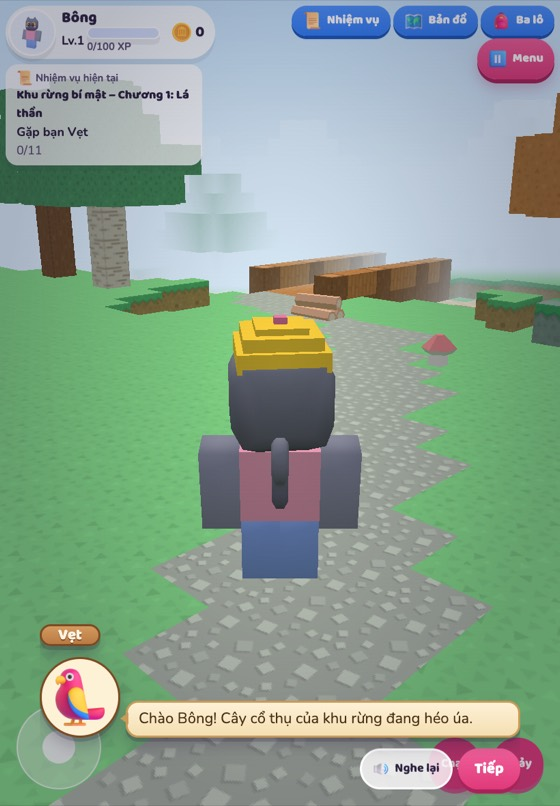
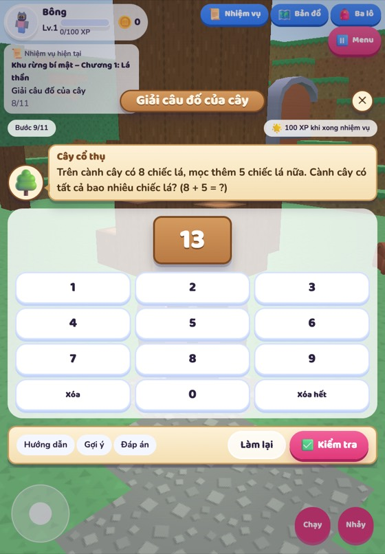
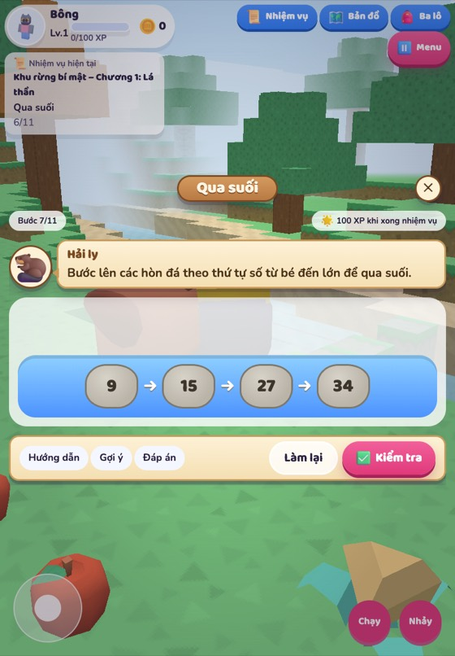
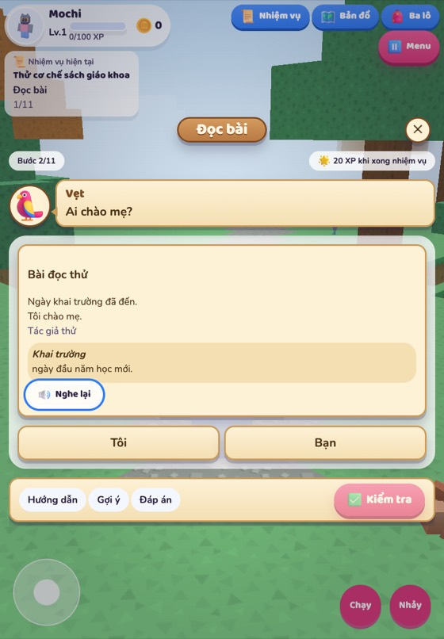
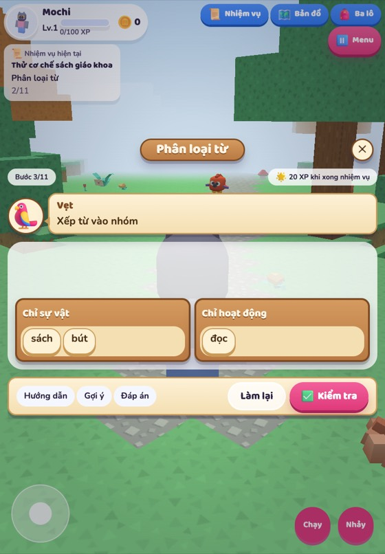
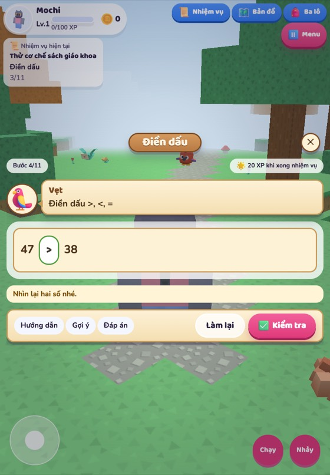
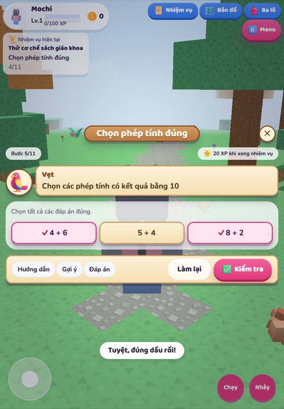
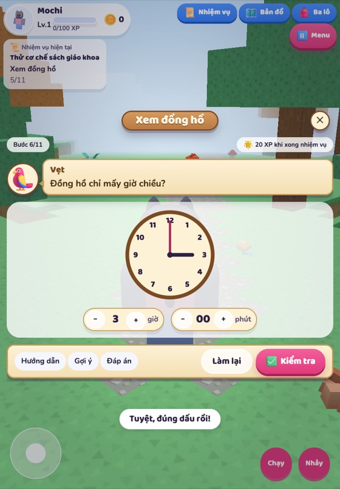
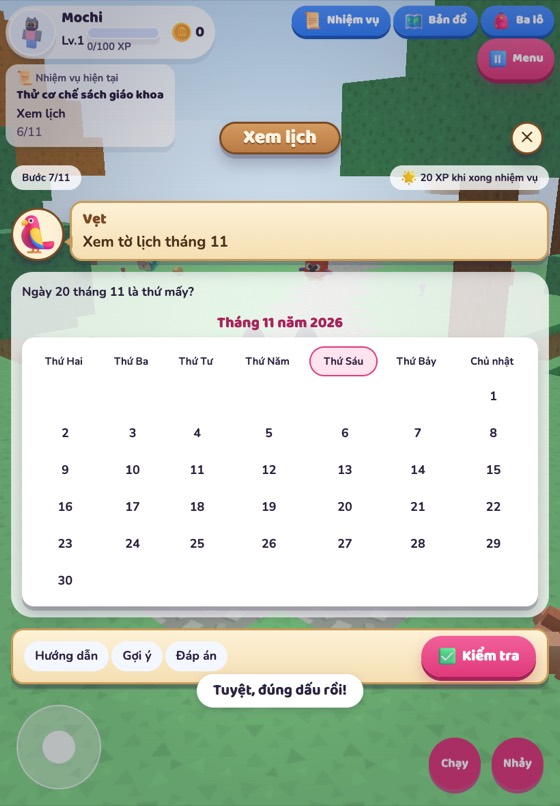
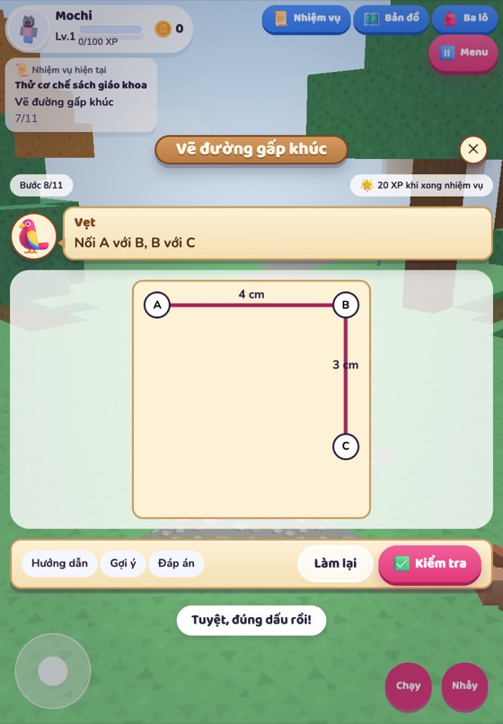
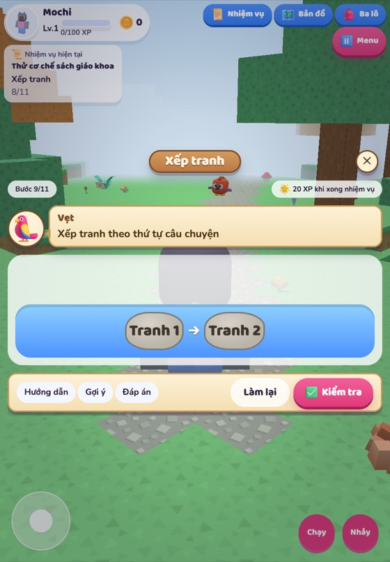
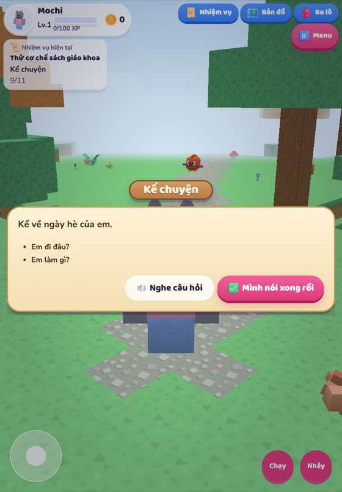
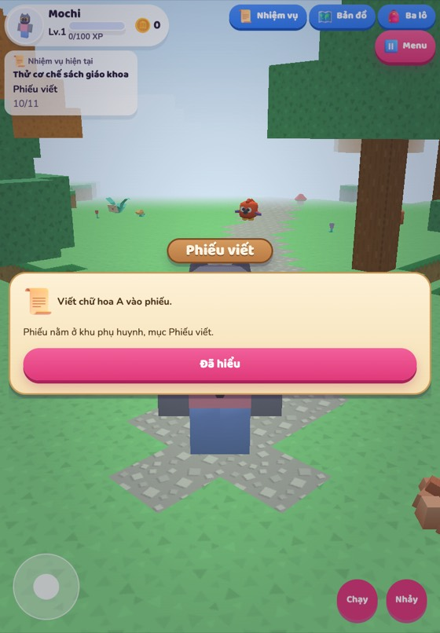
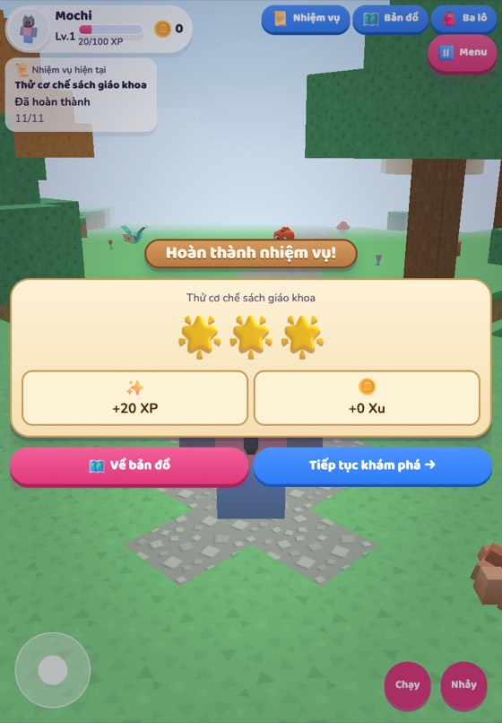
Tiếng Việt 2 · Bài 1. Tôi là học sinh lớp 2
Sâu Xanh vào lớp Hai
Sáng khai giảng của lớp Hai trong rừng: tên bé đi cùng Sâu Xanh, đọc chuyện một bạn nhỏ háo hức đến trường và tập nói lời chào.
- Ở đâu
- Khu rừng bí mật · chương 2
- Nhân vật
- Sâu Xanh (lần đầu vào lớp Hai của rừng), Vẹt Xanh dẫn đường
- Bài tập SGK
- 14 mục · 11 trong game · 3 qua phiếu · thiếu 0
- Thưởng
- 80 XP · 15 xu
Hội thoại›Nói›Đọc bài›Chọn nhiều›Phân loại›Đọc bài›Trắc nghiệm›Nói›Nói›Phiếu viết›Phần thưởng›Mở bài sau
Cần người duyệt xem
- Bài đọc hiểu số 2 và 3 là câu trả lời tự do trong sách; game cho chọn trong 3 đáp án, đáp án đúng là câu của sách, 2 đáp án sai do người viết đặt.
- 1Hội thoại
Gặp Sâu Xanh ở cổng rừng
- Sâu Xanh
- Ối, tên bé! Hôm nay tớ vào lớp Hai của rừng mà tim cứ đập thình thịch.
- Vẹt Xanh
- Sâu Xanh dậy từ lúc sương còn đọng trên lá đấy, bạn ấy sợ đến muộn nhất lớp.
- Sâu Xanh
- Cậu ở lại với tớ đến lúc trống vào học nhé?
Bé chọn: “Được chứ, mình đi cùng cậu!” → Vậy mình cùng xem cậu đã sẵn sàng chưa nào.
- 2Nói
Kể chuyện chuẩn bị khai giảng
Sâu Xanh tò mò hỏi: Em đã chuẩn bị những gì để đón ngày khai giảng?
- Nhìn tranh các bạn mặc đồng phục chạy đến trường rồi kể về mình.
Phủ bài tập SGK: tr. 10 · doc-kd
- 3Đọc bài
Đọc bài trên bảng gỗ
Bạn ấy có thực hiện được mong muốn đến sớm nhất lớp không? Vì sao?
Bài đọc: Tôi là học sinh lớp 2 — Văn Giá
Ngày khai trường đã đến.
Sáng sớm, mẹ mới gọi một câu mà tôi đã vùng dậy, khác hẳn mọi ngày. Loáng một cái, tôi đã chuẩn bị xong mọi thứ. Bố ngạc nhiên nhìn tôi, còn mẹ cười tủm tỉm. Tôi rối rít: “Con muốn đến lớp sớm nhất.”.
Tôi háo hức tưởng tượng ra cảnh mình đến đầu tiên, cất tiếng chào thật to những bạn đến sau. Nhưng vừa đến cổng trường, tôi đã thấy mấy bạn cùng lớp đang ríu rít nói cười ở trong sân. Thì ra, không chỉ mình tôi muốn đến sớm nhất. Tôi chào mẹ, chạy ào vào cùng các bạn.
Chúng tôi tranh nhau kể về chuyện ngày hè. Ngay cạnh chúng tôi, mấy em lớp 1 đang rụt rè níu chặt tay bố mẹ, thật giống tôi năm ngoái. Trước các em, tôi cảm thấy mình lớn bổng lên. Tôi đã là học sinh lớp 2 rồi cơ mà.- Loáng (một cái)
- rất nhanh.
- Níu
- nắm lấy và kéo lại, kéo xuống.
- Lớn bổng
- lớn nhanh, vượt hẳn lên.
- Không. Vì vừa đến cổng trường, bạn ấy đã thấy mấy bạn cùng lớp đang ríu rít nói cười ở trong sân.
- Có. Vì bạn ấy là người đến cổng trường đầu tiên.
- Không. Vì bạn ấy ngủ quên nên đến trường muộn.
Gợi ý: Bạn nhỏ muốn đến sớm nhất, nhưng trong sân đã có người rồi. · Đáp án: Không. Vì vừa đến cổng trường, bạn ấy đã thấy mấy bạn cùng lớp đang ríu rít nói cười ở trong sân.
Khi đúng
- Đúng rồi, các bạn cùng lớp đã tới trước!
- Chuẩn! Không chỉ mình bạn ấy muốn đến sớm.
- Giỏi lắm, tên bé đọc kĩ thật đấy.
Khi sai (mỗi lần một câu khác)
- Đọc lại câu "vừa đến cổng trường" xem sao.
- Sâu Xanh nghĩ khác đấy, mình dò lại đoạn hai nhé.
- Ai đang ríu rít trong sân nhỉ? Thử lần nữa nào.
Phủ bài tập SGK: tr. 11 · doc-2
- 4Chọn nhiều
Tìm những chi tiết háo hức
Những chi tiết nào cho thấy bạn nhỏ rất háo hức đến trường vào ngày khai giảng?
- vùng dậy
- muốn đến sớm nhất lớp
- chuẩn bị rất nhanh
- thấy mình lớn bổng lên
Gợi ý: Có ba chi tiết đúng; một chi tiết là cảm giác khi thấy các em lớp 1. · Đáp án: vùng dậy; muốn đến sớm nhất lớp; chuẩn bị rất nhanh
Khi đúng
- Tuyệt, đủ cả ba chi tiết háo hức!
- Sâu Xanh gật gù: đúng là vội như tớ sáng nay!
- Chọn chuẩn, không thừa không thiếu.
Khi sai (mỗi lần một câu khác)
- Còn thiếu hoặc thừa một chi tiết đấy.
- Chi tiết "lớn bổng lên" xảy ra lúc nào nhỉ?
- Đếm lại xem mình đã chọn mấy chi tiết nhé.
Phủ bài tập SGK: tr. 11 · doc-1
- 5Phân loại
Ghép đoạn với tranh
Tìm tranh thích hợp với mỗi đoạn trong bài đọc.
- Đoạn 1
- Đoạn 2
- Đoạn 3
Nhóm: Tranh 1 · Tranh 2 · Tranh 3
Gợi ý: Tranh bạn nhỏ đứng trước bố mẹ là chuyện ở nhà. · Đáp án: Đoạn 1 – tranh 3; đoạn 2 – tranh 2; đoạn 3 – tranh 1
Khi đúng
- Mỗi đoạn đã về đúng bức tranh của mình!
- Hay quá, câu chuyện hiện ra theo đúng thứ tự.
- tên bé nhìn tranh tinh ghê!
Khi sai (mỗi lần một câu khác)
- Đoạn nào kể chuyện ở nhà nhỉ?
- Một đoạn đang lạc sang tranh khác rồi.
- Thử nhìn xem trong tranh có em lớp 1 nào không.
Phủ bài tập SGK: tr. 11 · doc-4
- 6Đọc bài
Bạn nhỏ thay đổi thế nào
Bạn ấy nhận ra mình thay đổi như thế nào khi lên lớp 2?
Bài đọc: Tôi là học sinh lớp 2 — Văn Giá
Ngày khai trường đã đến.
Sáng sớm, mẹ mới gọi một câu mà tôi đã vùng dậy, khác hẳn mọi ngày. Loáng một cái, tôi đã chuẩn bị xong mọi thứ. Bố ngạc nhiên nhìn tôi, còn mẹ cười tủm tỉm. Tôi rối rít: “Con muốn đến lớp sớm nhất.”.
Tôi háo hức tưởng tượng ra cảnh mình đến đầu tiên, cất tiếng chào thật to những bạn đến sau. Nhưng vừa đến cổng trường, tôi đã thấy mấy bạn cùng lớp đang ríu rít nói cười ở trong sân. Thì ra, không chỉ mình tôi muốn đến sớm nhất. Tôi chào mẹ, chạy ào vào cùng các bạn.
Chúng tôi tranh nhau kể về chuyện ngày hè. Ngay cạnh chúng tôi, mấy em lớp 1 đang rụt rè níu chặt tay bố mẹ, thật giống tôi năm ngoái. Trước các em, tôi cảm thấy mình lớn bổng lên. Tôi đã là học sinh lớp 2 rồi cơ mà.- Loáng (một cái)
- rất nhanh.
- Níu
- nắm lấy và kéo lại, kéo xuống.
- Lớn bổng
- lớn nhanh, vượt hẳn lên.
- Trước các em, tôi cảm thấy mình lớn bổng lên.
- Bạn ấy thấy mình rụt rè như các em lớp 1.
- Bạn ấy thấy mình vẫn muốn ngủ thêm một lát.
Gợi ý: Bạn nhỏ đứng cạnh các em lớp 1 và thấy mình khác trước. · Đáp án: Trước các em, tôi cảm thấy mình lớn bổng lên.
Khi đúng
- Đúng thế, bạn nhỏ thấy mình lớn bổng lên!
- Sâu Xanh cũng muốn lớn bổng như thế đấy.
- Chính xác, câu cuối bài nói rõ điều đó.
Khi sai (mỗi lần một câu khác)
- Người rụt rè trong bài là ai thế?
- Thử đọc lại câu cuối cùng của bài xem.
- Gần được rồi, bạn nhỏ so mình với các em lớp 1 mà.
Phủ bài tập SGK: tr. 11 · doc-3
- 7Trắc nghiệm
Chọn từ tả các em lớp 1
Từ nào dưới đây nói về các em lớp 1 trong ngày khai trường?
- ngạc nhiên
- háo hức
- rụt rè
Gợi ý: Các em níu chặt tay bố mẹ vì còn ngại. · Đáp án: c. rụt rè
Khi đúng
- Đúng rồi, các em còn rụt rè lắm.
- Sâu Xanh thì thầm: năm ngoái tớ cũng rụt rè y thế.
- Chọn trúng từ trong bài luôn!
Khi sai (mỗi lần một câu khác)
- Người háo hức là bạn nhỏ lớp 2 cơ.
- Ai là người ngạc nhiên trong bài nhỉ? Không phải các em lớp 1 đâu.
- Tìm lại câu có "níu chặt tay bố mẹ" nhé.
Phủ bài tập SGK: tr. 11 · doc-lt1
- 8Nói
Tập nói lời chào
Trống sắp vào học rồi! Thực hiện các yêu cầu sau: a. Nói lời chào tạm biệt mẹ trước khi đến trường. b. Nói lời chào thầy, cô giáo khi đến lớp. c. Cùng bạn nói và đáp lời chào khi gặp nhau ở trường.
- Chào mẹ trước khi vào lớp.
- Chào thầy cô khi bước vào lớp.
- Chào một bạn và nghe bạn chào lại.
Phủ bài tập SGK: tr. 11 · doc-lt2-a, tr. 11 · doc-lt2-b, tr. 11 · doc-lt2-c
- 9Nói
Kể về những ngày hè
Giờ ra chơi, Sâu Xanh rủ tên bé kể chuyện: Kể về điều đáng nhớ nhất trong kì nghỉ hè của em. Em cảm thấy thế nào khi trở lại trường sau kì nghỉ hè?
- Nghỉ hè, em được đi những đâu?
- Em được tham gia những hoạt động nào?
- Em nhớ nhất điều gì?
Phủ bài tập SGK: tr. 12 · noi-nghe-1, tr. 12 · noi-nghe-2
- 10Phiếu viết
Phiếu viết bài 1
Nhờ bố mẹ in phiếu Bài 1 ở khu phụ huynh để tập viết chữ hoa A, câu ứng dụng và vài câu về ngày hè của em.
Phủ bài tập SGK: tr. 12 · viet-chu-hoa-1, tr. 12 · viet-ung-dung-2, tr. 12 · van-dung-1
- 11Phần thưởng
Quà của Sâu Xanh
Sâu Xanh tặng tên bé một chiếc lá vẽ hình ông mặt trời để kỉ niệm buổi sáng đầu tiên của lớp Hai.
- 12Mở bài sau
Tờ lịch bay đi
Một cơn gió thổi tờ lịch lá bay về phía gốc cây của Voi Bảo. Chuyện gì xảy ra với ngày hôm qua thế nhỉ?
Tiếng Việt 2 · Bài 2. Ngày hôm qua đâu rồi?
Voi Bảo tìm ngày hôm qua
Gió sớm thổi tung xấp lịch lá của Voi Bảo: tên bé nhặt lại từng tờ, đọc bài thơ về ngày hôm qua và giúp Voi khắc lại bảng chữ cái bị mưa làm mờ.
- Ở đâu
- Khu rừng bí mật · chương 2
- Nhân vật
- Voi Bảo (giữ lịch và đồng hồ của rừng, nhớ rất giỏi), Vẹt Xanh
- Bài tập SGK
- 24 mục · 20 trong game · 4 qua phiếu · thiếu 0
- Thưởng
- 85 XP · 15 xu
Hội thoại›Tìm đồ›Nói›Đọc bài›Chọn nhiều›Trắc nghiệm›Nói›Phân loại›Nói›Điền chỗ trống›Sắp xếp›Phân loại›Hội thoại›Phân loại›Nói›Nói›Phiếu viết›Phần thưởng›Mở bài sau
Cần người duyệt xem
- Bài xếp từ chỉ người / chỉ vật: sách không in đáp án, cách xếp (mẹ, bạn nhỏ là người; cánh đồng, nón, đèn bàn… là vật) do người viết chọn.
- Bài tìm từ chỉ hoạt động: ngoài ví dụ của sách, người viết thêm "giảng bài", "chải tóc" đọc từ tranh 3 và tranh 6.
- 1Hội thoại
Voi Bảo mất xấp lịch
- Voi Bảo
- tên bé ơi, cơn gió sớm nay giật tung cả xấp lịch lá treo trên gốc cây của tớ rồi!
- Vẹt Xanh
- Ba tờ lịch bay tuốt vào trong rừng, tờ nào cũng ghi một ngày đã qua đấy.
- Voi Bảo
- Tớ vốn nhớ giỏi nhất rừng, vậy mà giờ cứ ngẩn ra: ngày hôm qua đi đâu mất rồi nhỉ?
Bé chọn: “Để mình giúp cậu nhặt lại các tờ lịch!” → Voi Bảo vẫy vòi mừng rỡ: tớ thấy một tờ vướng ở bụi hồng, một tờ rơi xuống ruộng lúa đấy.
- 2Tìm đồ
Nhặt ba tờ lịch lá
Tìm trên bản đồ: tv2-t01-to-lich-bui-hong, tv2-t01-to-lich-ruong-lua, tv2-t01-to-lich-ban-hoc
- 3Nói
Kể chuyện hôm qua
Voi Bảo vuốt phẳng tờ lịch vừa nhặt được rồi quay sang hỏi tên bé: Kể lại những việc em đã làm ngày hôm qua.
- Buổi sáng hôm qua em thức dậy và làm gì trước tiên?
- Ở trường hôm qua em được học, được chơi những gì?
- Buổi tối em đã giúp bố mẹ việc gì?
Phủ bài tập SGK: tr. 13 · doc-kd
- 4Đọc bài
Bài thơ trên tờ lịch
Bạn nhỏ đã hỏi bố điều gì?
Bài đọc: Ngày hôm qua đâu rồi? — Bế Kiến Quốc
Em cầm tờ lịch cũ:
– Ngày hôm qua đâu rồi?
Ra ngoài sân hỏi bố
Xoa đầu em, bố cười.
– Ngày hôm qua ở lại
Trên cành hoa trong vườn
Nụ hồng lớn lên mãi
Đợi đến ngày toả hương.
– Ngày hôm qua ở lại
Trong hạt lúa mẹ trồng
Cánh đồng chờ gặt hái
Chín vàng màu ước mong.
– Ngày hôm qua ở lại
Trong vở hồng của con
Con học hành chăm chỉ
Là ngày qua vẫn còn.- Ngày hôm qua đâu rồi?
- Tờ lịch cũ để ở đâu hả bố?
- Bao giờ nụ hồng mới nở hả bố?
Gợi ý: Câu bạn nhỏ hỏi bố cũng chính là tên của bài thơ. · Đáp án: Ngày hôm qua đâu rồi?
Khi đúng
- Đúng rồi, bạn nhỏ hỏi bố y như Voi Bảo vừa hỏi tên bé!
- Chuẩn, câu hỏi ấy cũng là tên bài thơ đấy.
- Voi Bảo vỗ đôi tai to phành phạch: tên bé tìm ra ngay!
Khi sai (mỗi lần một câu khác)
- Câu bạn nhỏ hỏi bố nằm ở khổ thơ đầu, đọc lại nhé.
- Bạn nhỏ chưa hỏi chuyện hoa hồng đâu, thử lại xem.
- Tìm dòng thơ có dấu chấm hỏi ở khổ thứ nhất nào.
Phủ bài tập SGK: tr. 14 · doc-1
- 5Chọn nhiều
Ngày hôm qua ở đâu
Voi Bảo đặt ba tờ lịch lên phiến đá cạnh nhau. Theo lời bố, ngày hôm qua ở lại những đâu?
- Trên cành hoa trong vườn
- Ngoài sân, chỗ bố đứng cười
- Trong hạt lúa mẹ trồng
- Trong tờ lịch cũ em cầm
- Trong vở hồng của con
Gợi ý: Có ba nơi, ứng với ba khổ thơ bố trả lời bạn nhỏ. · Đáp án: Trên cành hoa trong vườn; trong hạt lúa mẹ trồng; trong vở hồng của con.
Khi đúng
- Đủ ba nơi rồi, ba tờ lịch khớp với ba khổ thơ!
- Tuyệt, cành hoa, hạt lúa, vở hồng đều có mặt.
- Voi Bảo gật gù: hoá ra ngày hôm qua chẳng mất đi đâu cả.
Khi sai (mỗi lần một câu khác)
- Còn một nơi bố nhắc tới mà tên bé chưa chọn đấy.
- Bố không nói ngày hôm qua nằm trong tờ lịch đâu nhé.
- Đếm lại những khổ thơ bắt đầu bằng "Ngày hôm qua ở lại" nào.
Phủ bài tập SGK: tr. 14 · doc-2
- 6Trắc nghiệm
Lời bố dặn
Tờ lịch thứ ba rơi đúng lên cuốn vở trên bàn học. Trong khổ thơ cuối, bố đã dặn bạn nhỏ làm gì để "ngày qua vẫn còn"?
- Con giữ thật kĩ tờ lịch cũ
- Con học hành chăm chỉ
- Con ra vườn tưới nụ hồng
Gợi ý: Điều bố dặn gắn với cuốn vở hồng của con. · Đáp án: Con học hành chăm chỉ
Khi đúng
- Chính xác, chăm học là giữ được ngày hôm qua!
- Đúng lời bố dặn, tên bé đọc kĩ ghê.
- Voi Bảo hứa từ mai cũng chăm học như bạn nhỏ.
Khi sai (mỗi lần một câu khác)
- Khổ thơ cuối nói về cuốn vở hồng, dò lại xem nào.
- Tờ lịch cũ không giữ được ngày qua đâu, thử lần nữa nhé.
- Tưới hoa là chuyện của khổ thơ khác, tên bé tìm khổ cuối nhé.
Phủ bài tập SGK: tr. 14 · doc-3
- 7Nói
Thuộc lòng hai khổ thơ
Voi Bảo muốn cất bài thơ vào trí nhớ thật lâu và rủ tên bé cùng học. Học thuộc lòng 2 khổ thơ em thích.
- Chọn hai khổ thơ em thấy hay nhất.
- Đọc chậm từng dòng, rồi nhắm mắt đọc lại một lượt.
- Đọc cho Voi Bảo nghe mà không nhìn vào bài.
Phủ bài tập SGK: tr. 14 · doc-htl
- 8Phân loại
Người và vật trên tờ lịch
Mặt sau mỗi tờ lịch lá có một bức tranh của bài thơ. Dựa vào tranh minh hoạ bài đọc, tìm từ ngữ chỉ người, chỉ vật. M: – mẹ – cánh đồng
- cánh đồng
- mẹ
- nón
- đèn bàn
- bạn nhỏ
- tờ lịch
- bình tưới
- hoa hồng
Nhóm: Từ ngữ chỉ người · Từ ngữ chỉ vật
Gợi ý: Trong các bức tranh chỉ có hai người: mẹ và bạn nhỏ. · Đáp án: Chỉ người: mẹ, bạn nhỏ. Chỉ vật: cánh đồng, nón, đèn bàn, tờ lịch, bình tưới, hoa hồng.
Khi đúng
- Hai nhóm gọn gàng như hai ngăn tủ của Voi Bảo!
- Đúng hết, người về nhóm người, vật về nhóm vật.
- tên bé nhìn tranh kĩ, không sót từ nào.
Khi sai (mỗi lần một câu khác)
- Có một từ chỉ người đang lạc sang nhóm vật rồi.
- Hoa hồng và cánh đồng là người hay là vật nhỉ?
- Nhìn lại tranh xem: ai đội nón, ai ngồi học bên đèn?
Phủ bài tập SGK: tr. 14 · doc-lt1
- 9Nói
Nói câu với từ vừa tìm
Voi Bảo thích nghe những câu thật tròn trịa. Đặt 2 câu với từ ngữ tìm được ở bài tập 1. M: Cánh đồng rộng mênh mông.
- Chọn một từ chỉ người, chẳng hạn: mẹ.
- Chọn một từ chỉ vật, chẳng hạn: hoa hồng.
- Nói mỗi câu cho trọn, cuối câu hạ giọng xuống.
Phủ bài tập SGK: tr. 14 · doc-lt2
- 10Điền chỗ trống
Bảng chữ cái bị mờ
Sau gốc cây là tấm bảng chữ cái Voi Bảo tự khắc, mưa đêm qua làm mờ mất bốn ô. Tìm những chữ cái còn thiếu trong bảng. Học thuộc tên các chữ cái.
Số thứ tự 3, chữ cái ▢, tên chữ cái ớ.
Số thứ tự 5, chữ cái ▢, tên chữ cái xê.
Số thứ tự 6, chữ cái ▢, tên chữ cái dê.
Số thứ tự 8, chữ cái ▢, tên chữ cái e.Gợi ý: Chữ tên "ớ" đội một chiếc mũ nhỏ; chữ tên "dê" không có gạch ngang. · Đáp án: Số thứ tự 3: â; số thứ tự 5: c; số thứ tự 6: d; số thứ tự 8: e.
Khi đúng
- Bốn ô mờ đã sáng rõ trở lại rồi!
- Đúng cả bốn chữ, Voi Bảo khắc lại ngay đây.
- tên bé thuộc bảng chữ cái vanh vách luôn.
Khi sai (mỗi lần một câu khác)
- Chữ tên "ớ" có đội mũ đấy, nhìn lại nhé.
- Chữ tên "dê" và chữ tên "đê" khác nhau ở nét gạch ngang.
- Đọc thầm a, ă, â, b, c… rồi dò lại từng ô xem.
Phủ bài tập SGK: tr. 14 · bang-chu-cai-2-a, tr. 14 · bang-chu-cai-2-b, tr. 14 · bang-chu-cai-2-c, tr. 14 · bang-chu-cai-2-d
- 11Sắp xếp
Sáu bông hoa chữ cái
Sáu bông hoa chữ cái rụng lộn xộn quanh gốc cây. Sắp xếp các chữ cái dưới đây theo đúng thứ tự trong bảng chữ cái. đ, c, b, d, a, ê
- đ
- c
- b
- d
- a
- ê
Gợi ý: Bông hoa đầu hàng mang chữ a, bông cuối hàng mang chữ ê. · Đáp án: a, b, c, d, đ, ê
Khi đúng
- Sáu bông hoa xếp hàng ngay ngắn quá!
- Đúng thứ tự bảng chữ cái rồi, giỏi ghê.
- Voi Bảo cài từng bông lên tai, vui không tả được.
Khi sai (mỗi lần một câu khác)
- Chữ đ và chữ d, chữ nào đứng trước nhỉ?
- Bông hoa chữ a phải đứng đầu hàng đấy.
- Thử đọc to bảng chữ cái rồi xếp lại nhé.
Phủ bài tập SGK: tr. 14 · bang-chu-cai-3
- 12Phân loại
Tám bức tranh trong hốc cây
Trong hốc cây, Voi Bảo còn cất tám bức tranh nhỏ vẽ những ai, những gì nó nhớ. Nhìn tranh, tìm từ ngữ: a. Chỉ sự vật: – Chỉ người: học sinh,... – Chỉ vật: cặp sách,... b. Chỉ hoạt động: đi học,...
- cặp sách
- đi học
- cô giáo
- khăn mặt
- chải tóc
- học sinh
- mũ lưỡi trai
- bác sĩ
- áo sơ mi
- giảng bài
Nhóm: Chỉ người · Chỉ vật · Chỉ hoạt động
Gợi ý: Bạn gái ở tranh 6 đang chải tóc; cô giáo ở tranh 3 đang giảng bài. · Đáp án: Chỉ người: học sinh, cô giáo, bác sĩ. Chỉ vật: cặp sách, khăn mặt, mũ lưỡi trai, áo sơ mi. Chỉ hoạt động: đi học, chải tóc, giảng bài.
Khi đúng
- Ba nhóm từ đứng ngay hàng thẳng lối!
- Người, vật, hoạt động, không nhầm nhóm nào cả.
- Voi Bảo phải ghi tên tên bé vào sổ nhớ mất thôi.
Khi sai (mỗi lần một câu khác)
- Việc ai đó đang làm thì thuộc nhóm hoạt động đấy.
- Bác sĩ là người hay là vật nhỉ? Thử lại nào.
- Còn một món đồ dùng lạc sang nhóm chỉ người kìa.
Phủ bài tập SGK: tr. 15 · tu-ngu-cau-1-a, tr. 15 · tu-ngu-cau-1-b
- 13Hội thoại
Những tấm thẻ giới thiệu
- Vẹt Xanh
- Voi Bảo ơi, cậu vẫn giữ mấy tấm thẻ giới thiệu bạn bè dưới gốc cây chứ?
- Voi Bảo
- Còn chứ! Có điều gió làm rách đôi từng tấm, nửa đầu một nơi, nửa sau một nẻo.
- Voi Bảo
- tên bé muốn nối lại tấm thẻ nào trước tiên?
Bé chọn: “Tấm thẻ về bạn Hà.” → Hà là bạn đi học cùng đường với tớ, bạn ấy hay chào tớ lắm.
Bé chọn: “Tấm thẻ về một ngôi trường.” → Ngôi trường ấy có tên riêng hẳn hoi, tớ nhớ như in.
Bé chọn: “Tấm thẻ về bố của một bạn.” → Bố bạn ấy từng băng vòi cho tớ khi tớ bị ngã đấy.
- 14Phân loại
Nối lại thẻ giới thiệu
Voi Bảo trải các nửa tấm thẻ ra bãi cỏ. Kết hợp từ ngữ ở cột A với từ ngữ ở cột B để tạo câu giới thiệu.
- Bạn Hà
- Bố em
- Trường em
Nhóm: là bác sĩ. · là Trường Tiểu học Lê Quý Đôn. · là học sinh lớp 2A.
Gợi ý: Chỉ có một nửa thẻ nói về một ngôi trường có tên riêng. · Đáp án: Bạn Hà là học sinh lớp 2A. Bố em là bác sĩ. Trường em là Trường Tiểu học Lê Quý Đôn.
Khi đúng
- Ba tấm thẻ liền lại thành ba câu giới thiệu!
- Ghép khớp từng câu, Voi Bảo đọc to lên rồi này.
- Đúng hết, câu nào nghe cũng hợp lí.
Khi sai (mỗi lần một câu khác)
- Bố em làm nghề gì nhỉ? Đọc lại cột B xem.
- Một ngôi trường không thể là học sinh được đâu.
- Thử đọc cả câu lên xem nghe có xuôi tai không nhé.
Phủ bài tập SGK: tr. 15 · tu-ngu-cau-2-a, tr. 15 · tu-ngu-cau-2-b, tr. 15 · tu-ngu-cau-2-c
- 15Nói
Tấm thẻ của tên bé
Voi Bảo đưa cho tên bé một tấm thẻ lá còn trắng tinh. Đặt một câu giới thiệu theo mẫu ở bài tập 2.
- Bắt đầu bằng một người hoặc một nơi em biết rõ.
- Nói tiếp bằng từ "là" và điều em muốn giới thiệu.
- Ví dụ: Mẹ em là cô giáo.
Phủ bài tập SGK: tr. 15 · tu-ngu-cau-3
- 16Nói
Đêm thơ quanh gốc cây
Trời tối dần, Voi Bảo mời cả rừng ngồi quanh gốc cây lịch nghe đọc thơ. Tìm đọc một bài thơ hoặc câu chuyện viết về thiếu nhi. Nói với các bạn tên bài thơ, câu chuyện và tên tác giả. Đọc một số câu thơ hay cho các bạn nghe.
- Em đã đọc bài thơ hay câu chuyện nào về các bạn nhỏ?
- Tên tác giả thường in ngay dưới tên bài.
- Đọc chậm, thật rõ những câu thơ em thích nhất.
Phủ bài tập SGK: tr. 16 · doc-mo-rong-1, tr. 16 · doc-mo-rong-2
- 17Phiếu viết
Phiếu viết bài 2
Nhờ bố mẹ in phiếu Bài 2 ở khu phụ huynh: nghe – viết hai khổ thơ cuối, trả lời câu hỏi về tranh hai bạn Bình và Khang, rồi viết vài câu tự giới thiệu về em.
Phủ bài tập SGK: tr. 14 · nghe-viet-1, tr. 16 · viet-doan-1-a, tr. 16 · viet-doan-1-b, tr. 16 · viet-doan-2
- 18Phần thưởng
Tờ lịch của hôm nay
Voi Bảo tặng tên bé tờ lịch lá của hôm nay, có dấu vòi làm chữ kí, để nhớ rằng ngày hôm qua vẫn còn ở trong vở.
- 19Mở bài sau
Cầu vồng sau mưa
Cơn mưa rào vừa tạnh, phía bãi cỏ bỗng hiện lên một chiếc cầu vồng. Nghe nói Thỏ Tí đang đứng đó ước đủ thứ trên đời!
Tiếng Việt 2 · Bài 10. Thời khoá biểu
Thỏ Tí mang nhầm sách vở
Sáng thứ Năm, Thỏ Tí đánh rơi đồ dọc đường và chẳng biết hôm nay học môn gì. tên bé cùng Voi Bảo đọc thời khoá biểu trên tấm bảng gỗ ở gốc sồi, dán nhãn đồ dùng và giúp Thỏ Tí soạn cặp thật ngăn nắp.
- Ở đâu
- Khu rừng bí mật · chương 6
- Nhân vật
- Thỏ Tí (nhanh nhảu, hay quên), Voi Bảo giữ lịch và đồng hồ của trường
- Bài tập SGK
- 20 mục · 17 trong game · 3 qua phiếu · thiếu 0
- Thưởng
- 90 XP · 15 xu
Hội thoại›Tìm đồ›Nói›Đọc bài›Phân loại›Chọn nhiều›Lịch›Nói›Nói›Điền chỗ trống›Điền chỗ trống›Phân loại›Sắp xếp›Điền chỗ trống›Hội thoại›Đồng hồ›Nói›Nói›Phiếu viết›Phần thưởng›Mở bài sau
Cần người duyệt xem
- Câu hỏi xem lịch "Lớp mình có tiết Mĩ thuật vào thứ mấy?" là câu người viết đặt theo mẫu sách, không phải chữ SGK.
- Câu 4 (khó khăn khi không có thời khoá biểu), thẻ từ chỉ sự vật / hoạt động và câu mẫu "Giờ ra chơi, bạn gái nhảy dây ở sân trường." là đáp án người viết chọn.
- Sách in ví dụ "7 giờ 30 phút" nhưng đồng hồ tranh 1 chỉ 7 giờ; game giữ chữ sách và dùng tranh 3 (9 giờ 30) cho bước xem đồng hồ.
- 1Hội thoại
Thỏ Tí cuống quýt ở gốc sồi
- Thỏ Tí
- tên bé ơi, cứu tớ với! Tớ chạy vội quá nên cặp sách tuột quai, thước kẻ với cái kéo cũng văng đâu mất rồi.
- Voi Bảo
- Lại vội nữa rồi. Hôm qua cậu còn quên hộp bút màu đúng hôm lớp có tiết vẽ đấy, Thỏ Tí.
- Thỏ Tí
- Tại tớ toàn soạn cặp theo trí nhớ. Hôm nay là thứ Năm, tớ chẳng biết phải mang sách gì nữa.
- Voi Bảo
- Tấm bảng gỗ ở gốc sồi có dán thời khoá biểu của lớp mình. Nhưng trước hết, mình tìm đồ cho cậu đã.
Bé chọn: “Mình giúp cậu tìm đồ ngay!” → Tớ nhớ đồ rơi quanh mấy bụi dương xỉ cạnh gốc sồi.
- 2Tìm đồ
Nhặt đồ Thỏ Tí đánh rơi
Tìm trên bản đồ: tv2-t05-thuoc-ke, tv2-t05-cai-keo, tv2-t05-cap-sach
- 3Nói
Làm sao biết môn học?
Voi Bảo phủi lá khô bám trên chiếc cặp rồi hỏi tên bé: Em làm thế nào để biết được các môn học trong ngày, trong tuần?
- Ở nhà, trước khi soạn sách vở, em thường xem gì?
- Bạn gái trong tranh dán tờ giấy gì trên tường cạnh bàn học?
Phủ bài tập SGK: tr. 43 · doc-kd
- 4Đọc bài
Đọc thời khoá biểu trên bảng gỗ
Đọc thời khoá biểu của ngày thứ Hai.
Sáng thứ Hai có mấy tiết?Bài đọc: Thời khoá biểu
Thời khoá biểu cho biết thời gian học các môn của từng ngày trong tuần. Thời khoá biểu gồm nhiều cột dọc và nhiều hàng ngang. Các bạn học sinh thường đọc thời khoá biểu theo trình tự thứ – buổi – tiết – môn.
THỜI KHOÁ BIỂU LỚP 2A
Tiết | Thứ Hai | Thứ Ba | Thứ Tư | Thứ Năm | Thứ Sáu
BUỔI SÁNG
1 | Hoạt động trải nghiệm | Tiếng Việt | Toán | Tiếng Việt | Tiếng Việt
2 | Toán | Tiếng Việt | Mĩ thuật | Tiếng Việt | Tiếng Việt
3 | Tiếng Việt | Toán | Tiếng Việt | Giáo dục thể chất | Toán
4 | Tiếng Việt | Giáo dục thể chất | Tiếng Việt | Toán | Tiếng Anh
BUỔI CHIỀU
1 | Tiếng Anh | Đạo đức | Hoạt động trải nghiệm | Tự nhiên và Xã hội | Âm nhạc
2 | Tự học có hướng dẫn | Tự học có hướng dẫn | Tự học có hướng dẫn | Tự học có hướng dẫn | Tự học có hướng dẫn
3 | | Tự nhiên và Xã hội | | | Hoạt động trải nghiệm- 3 tiết
- 4 tiết
- 5 tiết
Gợi ý: Các tiết buổi sáng được đánh số từ 1 trở đi. · Đáp án: 4 tiết
Khi đúng
- Đúng, sáng thứ Hai có 4 tiết!
- Voi Bảo gật gù: cậu đếm từng hàng rất cẩn thận.
- Chuẩn rồi, từ tiết 1 đến tiết 4.
Khi sai (mỗi lần một câu khác)
- Đếm lại các hàng trong phần BUỔI SÁNG nhé.
- Buổi chiều chưa tính đâu, chỉ xem buổi sáng thôi.
- Dò ngón tay dọc cột Thứ Hai từ trên xuống xem.
Phủ bài tập SGK: tr. 44 · doc-1, tr. 44 · doc-2
- 5Phân loại
Hôm nay thứ Năm học gì?
Thỏ Tí rối rít: “Hôm nay là thứ Năm, tớ phải mang sách gì đây?”
Thứ Năm có những môn học nào?
Kéo mỗi môn vào đúng giỏ.- Mĩ thuật
- Tiếng Việt
- Tiếng Anh
- Tự nhiên và Xã hội
- Hoạt động trải nghiệm
- Giáo dục thể chất
- Âm nhạc
- Tự học có hướng dẫn
- Đạo đức
- Toán
Nhóm: Có vào thứ Năm · Không có vào thứ Năm
Gợi ý: Thứ Năm có 5 môn khác nhau; Mĩ thuật thì học vào thứ Tư. · Đáp án: Có vào thứ Năm: Tiếng Việt, Giáo dục thể chất, Toán, Tự nhiên và Xã hội, Tự học có hướng dẫn.
Khi đúng
- Thỏ Tí reo lên: vậy là tớ cần vở Tiếng Việt và sách Toán!
- Đủ cả năm môn của thứ Năm rồi.
- Giỏi quá, không sót môn nào của buổi chiều.
Khi sai (mỗi lần một câu khác)
- Có một môn đang nằm nhầm giỏ đấy.
- Mĩ thuật học vào ngày nào nhỉ? Xem lại cột Thứ Tư.
- Đừng quên các tiết buổi chiều của thứ Năm nhé.
Phủ bài tập SGK: tr. 44 · doc-3
- 6Chọn nhiều
Thiếu thời khoá biểu thì sao?
Nếu không có thời khoá biểu, em sẽ gặp khó khăn gì?
Thỏ Tí gãi tai: sáng nay tớ gặp đúng mấy chuyện ấy. Chọn tất cả những khó khăn có thể xảy ra.- Không biết hôm nay học những môn gì
- Không biết đường đến trường
- Mang nhầm sách vở
- Không có bạn cùng chơi
- Quên đồ dùng cho môn học
Gợi ý: Có ba khó khăn gắn với môn học và sách vở. · Đáp án: Không biết hôm nay học những môn gì; Mang nhầm sách vở; Quên đồ dùng cho môn học
Khi đúng
- Đúng cả ba, y như buổi sáng lộn xộn của Thỏ Tí.
- Thỏ Tí lè lưỡi: tớ gặp đủ ba chuyện đó luôn!
- Chọn rất chuẩn, không thừa lựa chọn nào.
Khi sai (mỗi lần một câu khác)
- Thời khoá biểu có chỉ đường đến trường không nhỉ?
- Còn sót một khó khăn về đồ dùng học tập đấy.
- Xem lại: lựa chọn nào chẳng dính gì đến môn học?
Phủ bài tập SGK: tr. 44 · doc-4
- 7Lịch
Tiết Mĩ thuật vào thứ mấy?
Voi Bảo mở tờ lịch tháng Mười của trường và bày trò hỏi – đáp.
Dựa vào thời khoá biểu trên đây, hỏi – đáp theo mẫu:
Lớp mình có tiết Âm nhạc vào thứ mấy?
Lớp mình có tiết Âm nhạc vào thứ Sáu.Đến lượt tên bé: Lớp mình có tiết Mĩ thuật vào thứ mấy? Chạm vào đúng thứ trên tờ lịch.
Gợi ý: Mĩ thuật là tiết 2 của một buổi sáng giữa tuần. · Đáp án: Lớp mình có tiết Mĩ thuật vào thứ Tư.
Khi đúng
- Thứ Tư, chính xác! Hèn gì hôm qua Thỏ Tí cần bút màu.
- Voi Bảo đánh dấu thứ Tư bằng một chiếc lá đỏ.
- Hỏi – đáp đúng như mẫu rồi đấy.
Khi sai (mỗi lần một câu khác)
- Hôm nay thứ Năm đâu có tiết Mĩ thuật.
- Dò lại hàng tiết 2 của buổi sáng xem.
- Tìm chữ Mĩ thuật trước, rồi mới nhìn tên cột.
Phủ bài tập SGK: tr. 44 · doc-lt1
- 8Nói
Hỏi – đáp cùng Thỏ Tí
Dựa vào thời khoá biểu trên đây, hỏi – đáp theo mẫu:
Lớp mình có tiết Âm nhạc vào thứ mấy?
Lớp mình có tiết Âm nhạc vào thứ Sáu.
Bây giờ tên bé hỏi, Thỏ Tí đáp, rồi hai bạn đổi vai cho nhau.- Lớp mình có tiết Đạo đức vào thứ mấy?
- Lớp mình có tiết Tiếng Anh vào thứ mấy?
- Trả lời đủ câu, bắt đầu bằng: Lớp mình có tiết…
Phủ bài tập SGK: tr. 44 · doc-lt1
- 9Nói
Môn học em yêu thích
Thỏ Tí khoe: tớ mê nhất giờ Giáo dục thể chất vì được chạy nhảy thoả thích. Còn tên bé thì sao?
Nói một câu giới thiệu môn học hoặc hoạt động ở trường mà em thích.
M: Tiếng Việt là môn học tôi yêu thích nhất.- Ở trường, em thích môn học hay hoạt động nào nhất?
- Vì sao em thích môn học hay hoạt động đó?
Phủ bài tập SGK: tr. 45 · doc-lt2
- 10Điền chỗ trống
Dán nhãn cho đồ vừa nhặt
Ba món đồ tên bé nhặt được vẫn còn dính lá khô. Thỏ Tí muốn dán nhãn tên lên từng món để khỏi lạc nữa.
Dựa vào tranh, viết tên đồ vật có tiếng chứa c hoặc k.Tranh 1: ▢
Tranh 2: ▢
Tranh 3: ▢Gợi ý: Trước e viết k như trong kẻ, kéo; trước ă viết c như trong cặp. · Đáp án: thước kẻ; cái kéo; cặp sách
Khi đúng
- Nhãn nào cũng đúng chính tả, Thỏ Tí dán ngay!
- Tuyệt, tên bé nhớ luật c và k rất chắc.
- Ba cái nhãn thẳng hàng, đẹp như chữ cô viết.
Khi sai (mỗi lần một câu khác)
- Chữ k đi với e, ê, i đấy, thử lại nhé.
- Có một nhãn viết nhầm c với k rồi.
- Đọc chậm từng tiếng xem âm đầu đứng trước vần gì.
Phủ bài tập SGK: tr. 45 · chinh-ta-2-a, tr. 45 · chinh-ta-2-b, tr. 45 · chinh-ta-2-c
- 11Điền chỗ trống
Đoạn thơ bị nhoè chữ
Voi Bảo đọc cho cả lớp một đoạn thơ về mặt trời, nhưng mưa đêm qua làm nhoè mấy chữ. Hôm nay mình làm cả phần a lẫn phần b.
Chọn a hoặc b.
a. Chọn ch hoặc tr thay cho ô vuông.Mặt ▢ời mọc rồi lặn
▢ên đôi ▢ân lon ton
Hai ▢ân ▢ời của con
Là mẹ và cô giáo.
(Theo Trần Quốc Toàn)Gợi ý: Chữ đầu dòng phải viết hoa: Tr hoặc Ch. · Đáp án: Mặt trời mọc rồi lặn / Trên đôi chân lon ton / Hai chân trời của con / Là mẹ và cô giáo.
Khi đúng
- Đoạn thơ sáng rõ trở lại rồi!
- Voi Bảo vẫy vòi: trời, trên, chân, đúng hết!
- Tai tên bé nghe ch và tr rất tinh.
Khi sai (mỗi lần một câu khác)
- Mặt trời viết bằng tr, còn đôi chân thì sao?
- Ô vuông đầu dòng cần chữ viết hoa đấy.
- Một tiếng đang lẫn giữa ch và tr, đọc lại nhé.
Phủ bài tập SGK: tr. 45 · chinh-ta-3-a
- 12Phân loại
Tìm từ trong năm bức tranh
Voi Bảo treo lên bảng gỗ năm bức tranh về một ngày ở trường của các bạn nhỏ: viết bài, làm thủ công, hát theo đàn, tập thể dục và chơi dưới sân.
Dựa vào tranh, tìm từ ngữ:
– Chỉ sự vật
– Chỉ hoạt động- cây đàn
- viết bài
- nhảy dây
- sách
- ghế đá
- làm thủ công
- đá cầu
- bảng lớp
- tập thể dục
- hát
- quả cầu
Nhóm: Chỉ sự vật · Chỉ hoạt động
Gợi ý: Thử đặt “đang” trước từ: nghe hợp thì đó là từ chỉ hoạt động. · Đáp án: Chỉ sự vật: sách, bảng lớp, cây đàn, ghế đá, quả cầu. Chỉ hoạt động: viết bài, làm thủ công, hát, tập thể dục, nhảy dây, đá cầu.
Khi đúng
- Hai nhóm từ gọn gàng như ngăn cặp mới!
- Đúng rồi, quả cầu là sự vật còn đá cầu là hoạt động.
- Voi Bảo khen tên bé nhìn tranh rất kĩ.
Khi sai (mỗi lần một câu khác)
- Có thẻ gọi tên đồ vật đang lạc sang nhóm hoạt động.
- Thử nói “các bạn đang…” trước từ đó xem có hợp không.
- Quả cầu và đá cầu giống chữ nhưng khác nhóm đấy.
Phủ bài tập SGK: tr. 46 · tu-ngu-cau-1-a, tr. 46 · tu-ngu-cau-1-b
- 13Sắp xếp
Ghép câu nêu hoạt động
Đặt một câu nêu hoạt động với từ ngữ vừa tìm được.
Thỏ Tí chọn từ nhảy dây, nhưng các thẻ chữ bị gió thổi lộn xộn. Xếp lại thành câu giúp bạn ấy nhé.- nhảy dây
- ở sân trường.
- Giờ ra chơi,
- bạn gái
Gợi ý: Câu kể: khi nào, ai, làm gì, ở đâu. · Đáp án: Giờ ra chơi, bạn gái nhảy dây ở sân trường.
Khi đúng
- Câu tròn trịa, Thỏ Tí đọc to cho cả lớp nghe!
- Xếp chuẩn: khi nào, ai, làm gì, ở đâu.
- Hay quá, câu nêu hoạt động đã hoàn thành.
Khi sai (mỗi lần một câu khác)
- Thẻ nào có chữ viết hoa nhỉ? Nó phải đứng đầu.
- Dấu chấm đang không nằm ở cuối câu rồi.
- Đọc thử câu vừa xếp xem có xuôi tai không.
Phủ bài tập SGK: tr. 46 · tu-ngu-cau-2
- 14Điền chỗ trống
Bài thơ chú chim nhỏ
Trên cành sồi, một chú chim nhỏ hót chào tên bé. Thỏ Tí thuộc một bài thơ về chú chim này nhưng quên mất vài chữ.
Chọn a hoặc b.
b. Chọn v hoặc d thay cho ô vuông.Có con chim ▢ành khuyên nhỏ
▢áng trông thật ngoan ngoãn quá
Gọi ▢ạ, bảo ▢âng lễ phép ngoan nhất nhà.
(Theo Hoàng Vân)Gợi ý: Lời đáp lễ phép là “dạ” và “vâng”. · Đáp án: Có con chim vành khuyên nhỏ / Dáng trông thật ngoan ngoãn quá / Gọi dạ, bảo vâng lễ phép ngoan nhất nhà.
Khi đúng
- Chú chim vành khuyên hót vang như cảm ơn tên bé!
- Gọi dạ, bảo vâng: tên bé điền đúng hết.
- Thỏ Tí đọc lại trơn tru cả bài thơ rồi.
Khi sai (mỗi lần một câu khác)
- Dạ và vâng không viết cùng một chữ đầu đâu.
- Ô đầu dòng thứ hai cần chữ viết hoa.
- Tên chú chim là vành khuyên, thử lại ô đầu tiên nhé.
Phủ bài tập SGK: tr. 45 · chinh-ta-3-b
- 15Hội thoại
Lời hứa của Thỏ Tí
- Voi Bảo
- Thỏ Tí này, từ mai cậu định làm gì để không mang nhầm sách vở nữa?
- Thỏ Tí
- tên bé gợi ý cho tớ một cách thật dễ nhớ đi, tớ hứa sẽ làm theo!
Bé chọn: “Chép thời khoá biểu dán cạnh bàn học” → Ý hay! Ngẩng lên nhìn tường là tớ biết mai học môn gì.
Bé chọn: “Tối nào cũng soạn cặp theo thời khoá biểu” → Tớ sẽ soạn xong mới đi ngủ, không để sáng ra mới cuống lên.
- 16Đồng hồ
Đồng hồ giờ ra chơi
Voi Bảo kể về một ngày ở trường của bạn Nam, bức tranh nào cũng có một chiếc đồng hồ.
Quan sát tranh, kể lại các hoạt động của bạn Nam.
M: 7 giờ 30 phút, bạn Nam đi học.
Ở tranh 3, các bạn đang chạy ra sân chơi. Đồng hồ trong tranh chỉ mấy giờ?Gợi ý: Kim ngắn đang nằm giữa số 9 và số 10. · Đáp án: 9 giờ 30 phút
Khi đúng
- 9 giờ 30 phút, đúng giờ ra chơi rồi!
- Voi Bảo lắc chuông: tên bé xem đồng hồ giỏi thật.
- Chuẩn, kim dài chỉ số 6 là 30 phút.
Khi sai (mỗi lần một câu khác)
- Kim ngắn đã qua số 9 chưa nhỉ?
- Nhìn lại kim dài đang chỉ vào số mấy.
- Kim ngắn là giờ, kim dài là phút, đừng đổi chỗ nhé.
Phủ bài tập SGK: tr. 47 · viet-doan-1
- 17Nói
Kể một ngày của bạn Nam
Quan sát tranh, kể lại các hoạt động của bạn Nam.
M: 7 giờ 30 phút, bạn Nam đi học.
tên bé kể lần lượt bốn tranh cho Thỏ Tí nghe, nói giờ trước rồi mới nói việc bạn Nam làm.- Tranh 1: bạn Nam đeo cặp đi vào cổng trường.
- Tranh 2 (8 giờ): cô giáo giảng bài, các bạn ngồi học.
- Tranh 3 (9 giờ 30 phút): các bạn chạy ra sân chơi.
- Tranh 4 (11 giờ 30 phút): bạn Nam bưng khay cơm ở nhà ăn.
Phủ bài tập SGK: tr. 47 · viet-doan-1
- 18Nói
Bảng tin của trường em
Góc dưới tấm bảng gỗ có dán tờ tin: tối thứ Bảy, cả rừng họp mặt đọc truyện dưới trăng. Thỏ Tí tò mò muốn biết trường của tên bé có tin gì.
Đọc bảng tin của nhà trường.
Chia sẻ với bạn những thông tin mà em quan tâm.- Bảng tin ở trường em đặt ở đâu?
- Tuần này bảng tin có thông báo gì mới?
- Tin nào khiến em thấy thích thú nhất? Vì sao?
Phủ bài tập SGK: tr. 47 · doc-mo-rong-1, tr. 47 · doc-mo-rong-2
- 19Phiếu viết
Phiếu viết bài 10
Nhờ bố mẹ in phiếu Bài 10 ở khu phụ huynh: nghe – viết đoạn đầu bài Thời khoá biểu, kể các hoạt động của bạn Nam và lập thời gian biểu buổi tối của em.
Phủ bài tập SGK: tr. 45 · nghe-viet-1, tr. 47 · viet-doan-1, tr. 47 · viet-doan-2
- 20Phần thưởng
Kẹp lá sồi của Thỏ Tí
Thỏ Tí tặng tên bé một chiếc kẹp lá sồi để kẹp thời khoá biểu vào góc học tập, còn Voi Bảo đóng lên đó con dấu hình chiếc vòi.
- 21Mở bài sau
Tiếng trống bên suối
Từ chòi trống bên suối vọng lại tiếng Chó Mực gọi í ới. Chiếc trống trường nằm im suốt mùa hè, liệu hôm nay có chịu cất tiếng không?
Tiếng Việt 2 · Bài 17. Gọi bạn
Tiếng gọi trên đồng cỏ khô
Đồng cỏ khô nứt nẻ, Thỏ Tí đi tìm cỏ non rồi quên đường về. tên bé cùng Bò Sữa Mơ đọc bài thơ Gọi bạn, lần theo dấu chân và kể lại chuyện đôi bạn bê vàng, dê trắng để gọi Thỏ Tí trở về.
- Ở đâu
- Khu rừng bí mật · chương 11
- Nhân vật
- Bò Sữa Mơ (lo cho bạn), Thỏ Tí (đi tìm cỏ non rồi lạc đường), Vẹt Xanh
- Bài tập SGK
- 17 mục · 14 trong game · 3 qua phiếu · thiếu 0
- Thưởng
- 85 XP · 15 xu
Hội thoại›Tìm đồ›Nói›Đọc bài›Chọn nhiều›Đọc bài›Điền chỗ trống›Sắp xếp›Nói›Nói›Hội thoại›Nói›Sắp xếp›Nói›Nói›Hội thoại›Phiếu viết›Phần thưởng›Mở bài sau
Cần người duyệt xem
- Bước chọn nhiều ý (trời hạn hán, suối cạn, cỏ héo khô) cắt từ câu trả lời của sách; máy chưa tự so được dạng này.
- Bước xếp 8 dòng thơ là bước ôn thêm do người viết thêm; bước nói mới là bước tính cho yêu cầu "Học thuộc lòng".
- 1Hội thoại
Bò Sữa Mơ giữa đồng khô
- Bò Sữa Mơ
- tên bé ơi, đồng cỏ nhà tớ khô nứt cả rồi, chẳng còn lấy một ngọn cỏ non.
- Bò Sữa Mơ
- Sáng nay Thỏ Tí bảo đi tìm cỏ non cho tớ, đến giờ vẫn chưa thấy về.
- Vẹt Xanh
- Thỏ Tí đãng trí lắm, chắc lại quên mất đường về rồi!
- Bò Sữa Mơ
- Cậu giúp tớ tìm bạn ấy nhé? Tớ gọi mãi mà khản cả giọng.
Bé chọn: “Mình cùng đi tìm Thỏ Tí ngay!” → Cảm ơn cậu! Ta đi về phía mấy bụi cỏ cháy vàng kia.
- 2Tìm đồ
Lần theo dấu chân Thỏ Tí
Tìm trên bản đồ: tv2-t10-dau-chan-tho, tv2-t10-cu-ca-rot-roi, tv2-t10-bang-go-goi-ban
- 3Nói
Kể Bò nghe về một người bạn
Vừa đi, Bò Sữa Mơ vừa kể về Thỏ Tí rồi quay sang hỏi tên bé: Nói về một người bạn của em.
- Bạn ấy tên là gì, học cùng lớp hay ở gần nhà em?
- Em và bạn ấy hay cùng nhau làm những gì?
- Em quý nhất điều gì ở người bạn ấy?
Phủ bài tập SGK: tr. 79 · doc-kd
- 4Đọc bài
Đọc bài thơ trên bảng gỗ
Câu chuyện được kể trong bài thơ diễn ra khi nào? Ở đâu?
Bài đọc: Gọi bạn — Định Hải
Tự xa xưa thuở nào
Trong rừng xanh sâu thẳm
Đôi bạn sống bên nhau
Bê vàng và dê trắng.
Một năm, trời hạn hán
Suối cạn, cỏ héo khô
Lấy gì nuôi đôi bạn
Chờ mưa đến bao giờ?
Bê vàng đi tìm cỏ
Lang thang quên đường về
Dê trắng thương bạn quá
Chạy khắp nẻo tìm bê
Đến bây giờ dê trắng
Vẫn gọi hoài: “Bê! Bê!”.- Sâu thẳm
- rất sâu.
- Hạn hán
- tình trạng thiếu nước do nắng lâu, không mưa gây ra.
- Lang thang
- đi hết chỗ này đến chỗ khác, không dừng lại ở nơi nào.
- Mới mùa hè năm ngoái, trên đồng cỏ cạnh làng.
- Tự xa xưa thuở nào, trong rừng xanh sâu thẳm.
- Vào một đêm trăng, bên bờ biển xanh.
Gợi ý: Hai dòng đầu bài thơ trả lời cả "khi nào" lẫn "ở đâu". · Đáp án: Tự xa xưa thuở nào, trong rừng xanh sâu thẳm.
Khi đúng
- Đúng rồi, chuyện có từ xa xưa lắm!
- Chuẩn, đôi bạn sống giữa rừng xanh sâu thẳm.
- Bò Sữa Mơ vẫy đuôi: cậu đọc thơ giỏi ghê!
Khi sai (mỗi lần một câu khác)
- Khổ thơ đầu có câu trả lời đấy, đọc lại nhé.
- Bài thơ không nhắc tới đêm trăng hay bờ biển đâu.
- Dòng thơ nào bắt đầu bằng "Tự xa xưa" nhỉ?
Phủ bài tập SGK: tr. 80 · doc-1
- 5Chọn nhiều
Vì sao bê vàng phải đi xa
Bò Sữa Mơ nhìn đồng cỏ nứt nẻ mà thở dài: y hệt trong bài thơ! Chuyện gì xảy ra khiến bê vàng phải lang thang đi tìm cỏ?
- trời hạn hán
- bê vàng giận dê trắng
- suối cạn
- mưa to làm ngập rừng
- cỏ héo khô
Gợi ý: Có ba điều đúng, đều nằm ở hai dòng đầu của khổ thơ thứ hai. · Đáp án: Một năm, trời hạn hán, suối cạn, cỏ héo khô.
Khi đúng
- Đủ cả ba điều rồi, giỏi quá!
- Đúng thế, rừng khô hạn nên chẳng còn cỏ.
- Bò Sữa Mơ gật gù: đồng cỏ của tớ cũng khô như thế.
Khi sai (mỗi lần một câu khác)
- Hình như còn thiếu một điều, đọc lại khổ hai nhé.
- Trong bài, đôi bạn có giận nhau đâu nào.
- Năm ấy rừng mong mưa lắm, làm gì có mưa to.
Phủ bài tập SGK: tr. 80 · doc-2
- 6Đọc bài
Dê trắng làm gì khi mất bạn
Khi bê vàng quên đường về, dê trắng đã làm gì?
Bài đọc: Gọi bạn — Định Hải
Tự xa xưa thuở nào
Trong rừng xanh sâu thẳm
Đôi bạn sống bên nhau
Bê vàng và dê trắng.
Một năm, trời hạn hán
Suối cạn, cỏ héo khô
Lấy gì nuôi đôi bạn
Chờ mưa đến bao giờ?
Bê vàng đi tìm cỏ
Lang thang quên đường về
Dê trắng thương bạn quá
Chạy khắp nẻo tìm bê
Đến bây giờ dê trắng
Vẫn gọi hoài: “Bê! Bê!”.- Sâu thẳm
- rất sâu.
- Hạn hán
- tình trạng thiếu nước do nắng lâu, không mưa gây ra.
- Lang thang
- đi hết chỗ này đến chỗ khác, không dừng lại ở nơi nào.
- Dê trắng ở nhà chờ mưa đến rồi mới đi tìm bê.
- Dê trắng đi tìm bụi cỏ non cho riêng mình.
- Dê trắng thương bạn quá, chạy khắp nẻo tìm bê, đến bây giờ vẫn gọi hoài: “Bê! Bê!”.
Gợi ý: Dê trắng không ngồi yên chờ đâu, bạn ấy chạy đi và gọi mãi. · Đáp án: Dê trắng thương bạn quá, chạy khắp nẻo tìm bê, đến bây giờ vẫn gọi hoài: “Bê! Bê!”.
Khi đúng
- Chính xác, dê trắng chạy khắp nẻo tìm bạn.
- Thương bạn quá nên dê trắng gọi mãi không thôi.
- tên bé tìm đúng những dòng thơ cuối rồi!
Khi sai (mỗi lần một câu khác)
- Dê trắng có ngồi chờ mưa đâu, đọc lại nhé.
- Bạn ấy đi tìm bê chứ không tìm cỏ cho mình.
- Dò lại bốn dòng thơ cuối cùng xem sao.
Phủ bài tập SGK: tr. 80 · doc-3
- 7Điền chỗ trống
Tâm trạng của dê trắng
Bò Sữa Mơ khẽ nói: gọi Thỏ Tí mãi không thấy, tớ cũng giống dê trắng quá. Tìm từ ngữ thể hiện tâm trạng của dê trắng khi không thấy bạn trở về.
Dê trắng ▢
Chạy khắp nẻo tìm bêGợi ý: Dê trắng không giận, cũng chẳng vui, mà rất thương bạn. · Đáp án: thương bạn quá
Khi đúng
- Đúng rồi, dê trắng thương bạn quá!
- Điền chuẩn từ ngữ trong bài thơ luôn.
- Bò Sữa Mơ rưng rưng: tớ cũng thương Thỏ Tí như thế.
Khi sai (mỗi lần một câu khác)
- Dê trắng có giận bê vàng đâu nào.
- Bạn lạc mất rồi, dê trắng vui sao được?
- Đọc lại dòng thơ ngay trước "Chạy khắp nẻo tìm bê" nhé.
Phủ bài tập SGK: tr. 80 · doc-lt1
- 8Sắp xếp
Xếp lại hai khổ thơ đầu
Gió khô thổi tung các dòng thơ trên bảng gỗ. Xếp lại cho đúng để tập đọc thuộc: Học thuộc lòng 2 khổ thơ đầu.
- Một năm, trời hạn hán
- Tự xa xưa thuở nào
- Chờ mưa đến bao giờ?
- Đôi bạn sống bên nhau
- Suối cạn, cỏ héo khô
- Trong rừng xanh sâu thẳm
- Lấy gì nuôi đôi bạn
- Bê vàng và dê trắng.
Gợi ý: Bài thơ mở đầu bằng "Tự xa xưa thuở nào", khổ hai mở đầu bằng "Một năm, trời hạn hán". · Đáp án: Tự xa xưa thuở nào / Trong rừng xanh sâu thẳm / Đôi bạn sống bên nhau / Bê vàng và dê trắng. / Một năm, trời hạn hán / Suối cạn, cỏ héo khô / Lấy gì nuôi đôi bạn / Chờ mưa đến bao giờ?
Khi đúng
- Hai khổ thơ đã về đúng chỗ!
- Đọc lên nghe êm như tiếng suối ngày xưa.
- Xếp khéo quá, giờ mình tập đọc thuộc thôi.
Khi sai (mỗi lần một câu khác)
- Có dòng thơ đang đứng nhầm chỗ rồi.
- Nhớ nhé: khổ đầu nói về đôi bạn, khổ sau nói về hạn hán.
- Dòng có dấu chấm hỏi là dòng cuối khổ hai đấy.
Phủ bài tập SGK: tr. 80 · doc-htl
- 9Nói
Đọc thuộc lòng cho Bò nghe
Bò Sữa Mơ nhắm mắt lắng nghe, tai khẽ vẫy theo nhịp thơ. Học thuộc lòng 2 khổ thơ đầu.
- Tự xa xưa thuở nào
- Một năm, trời hạn hán
Phủ bài tập SGK: tr. 80 · doc-htl
- 10Nói
Cảm nghĩ về bê vàng, dê trắng
Bò Sữa Mơ hỏi nhỏ: cậu nghĩ gì về đôi bạn trong bài thơ? Nêu cảm nghĩ của em về bê vàng và dê trắng.
- Em thấy tình bạn của bê vàng và dê trắng thế nào?
- Em thương bạn nào hơn? Vì sao?
- Nếu là dê trắng, em sẽ làm gì?
Phủ bài tập SGK: tr. 80 · doc-4
- 11Hội thoại
Bò Sữa Mơ buồn bên suối cạn
- Bò Sữa Mơ
- Tớ cứ nghĩ mãi về dê trắng, gọi hoài mà bạn chẳng về.
- Bò Sữa Mơ
- Giờ tớ cũng đang giống dê trắng đây này, tên bé ạ.
Bé chọn: “Đừng buồn, mình sẽ cùng cậu tìm cho bằng được!” → Có cậu bên cạnh, tớ thấy vững dạ hơn nhiều.
Bé chọn: “Cậu gọi to thêm lần nữa đi, mình gọi cùng cậu.” → Được, ta cùng gọi thật to nhé: Tí ơi!
Bé chọn: “Thỏ Tí nhanh nhảu lắm, chắc đang tìm đường về đấy.” → Ừ nhỉ, biết đâu bạn ấy sắp về tới nơi.
- 12Nói
Nói lời an ủi dê trắng
Vẹt Xanh bày trò đóng vai cho Bò vui lên. Đóng vai một người bạn trong rừng, nói lời an ủi dê trắng.
- Dê trắng ơi, đừng buồn nhé!
- Tớ sẽ cùng cậu đi tìm bê vàng.
- Chắc bê vàng cũng đang nhớ cậu lắm.
Phủ bài tập SGK: tr. 80 · doc-lt2
- 13Sắp xếp
Xếp tranh trên vách đá
Trên vách đá cạnh suối cạn có bốn bức tranh kể chuyện đôi bạn, nhưng đã bị xáo trộn. Dựa vào tranh minh hoạ câu chuyện trong bài thơ Gọi bạn và gợi ý, nói về sự việc trong từng tranh. Trước hết, hãy xếp các tranh theo đúng thứ tự câu chuyện.
- Bê vàng đi tìm cỏ, (...).
Dê trắng thương bạn, (...). - Từ xa xưa, trong rừng xanh sâu thẳm, (...).
- Đến bây giờ, dê trắng (...).
- Một năm, trời hạn hán (...).
Gợi ý: Các bức tranh đi theo đúng thứ tự các khổ thơ. · Đáp án: Đôi bạn bên suối → rừng khô hạn → bê vàng đi tìm cỏ → dê trắng đứng gọi "Bê! Bê!"
Khi đúng
- Bốn bức tranh đã kể đúng câu chuyện!
- Vách đá giờ đọc lên thành bài thơ rồi.
- Xếp tranh tài thật, tên bé nhớ bài thơ kĩ quá.
Khi sai (mỗi lần một câu khác)
- Đôi bạn còn vui bên suối thì phải đứng đầu chứ.
- Hạn hán xảy ra trước khi bê vàng đi tìm cỏ đấy.
- Tiếng gọi "Bê! Bê!" là cảnh cuối cùng nhé.
Phủ bài tập SGK: tr. 81 · ke-chuyen-1-a, tr. 81 · ke-chuyen-1-b, tr. 81 · ke-chuyen-1-c, tr. 81 · ke-chuyen-1-d
- Bê vàng đi tìm cỏ, (...).
- 14Nói
Kể chuyện bê vàng theo tranh
Bò Sữa Mơ bảo: kể to lên, biết đâu Thỏ Tí nghe thấy! Dựa vào tranh minh hoạ câu chuyện trong bài thơ Gọi bạn và gợi ý, nói về sự việc trong từng tranh. Chọn kể 1 – 2 đoạn của câu chuyện theo tranh.
- Từ xa xưa, trong rừng xanh sâu thẳm, (...).
- Một năm, trời hạn hán (...).
- Bê vàng đi tìm cỏ, (...).
Dê trắng thương bạn, (...). - Đến bây giờ, dê trắng (...).
Phủ bài tập SGK: tr. 81 · ke-chuyen-1-a, tr. 81 · ke-chuyen-1-b, tr. 81 · ke-chuyen-1-c, tr. 81 · ke-chuyen-1-d, tr. 81 · ke-chuyen-2
- 15Nói
Kể tiếp đoạn kết chuyện đôi bạn
Bài thơ dừng ở tiếng gọi "Bê! Bê!" vang mãi trong rừng. Kể tiếp đoạn kết của câu chuyện theo ý của em.
- Bê vàng có nghe thấy tiếng gọi không?
- Các bạn trong rừng có giúp dê trắng không?
- Khi gặp lại nhau, đôi bạn nói gì với nhau?
Phủ bài tập SGK: tr. 81 · ke-chuyen-3
- 16Hội thoại
Thỏ Tí nghe tiếng gọi
- Thỏ Tí
- Bò ơi! tên bé ơi! Tớ nghe tiếng các cậu kể chuyện từ tận bên kia đồi!
- Thỏ Tí
- Tớ mải hái cỏ non, quay đi quay lại thì quên béng mất lối về.
- Bò Sữa Mơ
- May quá, tớ không phải gọi hoài như dê trắng nữa rồi!
- Thỏ Tí
- Tớ mang về cả một bó cỏ non đây, mình chia nhau nhé.
Bé chọn: “Lần sau đi xa, cậu nhớ rủ bạn đi cùng nhé!” → Tớ hứa! Mà cậu nhắc tớ với, tớ đãng trí lắm.
- 17Phiếu viết
Phiếu viết Bài 17
Nhờ bố mẹ in phiếu Bài 17 ở khu phụ huynh để tập viết chữ hoa H, câu ứng dụng và vài câu nhận xét về đôi bạn bê vàng và dê trắng.
Phủ bài tập SGK: tr. 80 · viet-chu-hoa-1, tr. 80 · viet-ung-dung-2, tr. 81 · van-dung-1
- 18Phần thưởng
Chiếc chuông của Bò Sữa Mơ
Bò Sữa Mơ tặng tên bé một chiếc chuông đồng nhỏ: từ nay lạc nhau ở đâu, chỉ cần rung chuông là bạn bè tìm thấy.
- 19Mở bài sau
Lá thư bên bến hồ
Trên đường về, Thỏ Tí nhặt được một lá thư dán tem hình bông tuyết, đề gửi Gấu Tuyết Bông ở bến thư bên hồ.
Tiếng Việt 2 · Bài 25. Sự tích hoa tỉ muội
Ong Vàng và bụi hoa tỉ muội
Hai chị em ong con giận nhau vì một chùm hoa; tên bé cùng Ong Vàng đọc sự tích chị Nết cõng em Na chạy lũ và giúp hai bạn làm lành.
- Ở đâu
- Khu rừng bí mật · chương 15
- Nhân vật
- Ong Vàng và hai chị em ong con Hồng, Nụ
- Bài tập SGK
- 17 mục · 14 trong game · 3 qua phiếu · thiếu 0
- Thưởng
- 80 XP · 15 xu
Hội thoại›Tìm đồ›Nói›Đọc bài›Chọn nhiều›Trắc nghiệm›Nói›Phân loại›Nói›Hội thoại›Nói›Sắp xếp›Nói›Phiếu viết›Phần thưởng›Mở bài sau
Cần người duyệt xem
- Bước chọn nhiều ý: 4 ý đúng cắt từ câu trả lời của sách, 2 ý sai là câu trích từ bài đọc do người viết chọn.
- 1Hội thoại
Hai chị em ong giận nhau
- Ong Vàng
- tên bé ơi, may quá cậu đến! Hai cháu ong nhà tớ đang giận nhau ở bụi hoa đầu vườn.
- Ong Hồng
- Chùm hoa to nhất là của chị, chị nhìn thấy nó trước!
- Ong Nụ
- Nhưng em bay tới trước mà... Chị chẳng bao giờ nhường em cả.
- Ong Vàng
- Sáng nay cả bụi chỉ nở đúng một chùm. Cậu giúp tớ dỗ hai đứa làm lành nhé?
Bé chọn: “Để mình thử, chắc chắn hai bạn sẽ làm lành!” → Ong Vàng rung cánh: trước hết, mình ra xem chùm hoa ấy đã.
- 2Tìm đồ
Tìm chùm hoa vừa nở
Tìm trên bản đồ: tv2-t14-chum-hoa-lon, tv2-t14-nu-hoa-be
- 3Nói
Kể việc anh chị làm cho em
Ong Hồng vẫn còn phụng phịu, quay sang hỏi tên bé: Nói về những việc anh chị thường làm cho em.
- Anh chị của em, hoặc của bạn em, thường giúp em việc gì?
- Anh chị có hay nhường em quà bánh, đồ chơi không?
- Được anh chị chăm sóc, em thấy thế nào?
Phủ bài tập SGK: tr. 109 · doc-kd
- 4Đọc bài
Đọc sự tích dưới bụi hoa
Nước lũ dâng cao, chị Nết đưa Na đến nơi an toàn bằng cách nào?
Bài đọc: Sự tích hoa tỉ muội — Theo Trần Mạnh Hùng
Ngày xưa, có hai chị em Nết và Na mồ côi cha mẹ, sống trong ngôi nhà nhỏ bên sườn núi. Nết thương Na, cái gì cũng nhường em. Đêm đông, gió ù ù lùa vào nhà, Nết vòng tay ôm em:
– Em rét không ?
Na ôm choàng lấy chị, cười rúc rích:
– Ấm quá!
Nết ôm em chặt hơn, thầm thì:
– Mẹ bảo, chị em mình là hai bông hoa hồng, chị là bông to, em là bông nhỏ. Chị em mình mãi bên nhau nhé!
Na gật đầu. Hai chị em cứ thế ôm nhau ngủ.
Năm ấy, nước lũ dâng cao, Nết cõng em chạy theo dân làng đến nơi an toàn. Hai bàn chân Nết rớm máu. Thấy vậy, Bụt thương lắm. Ông giơ gậy thần lên. Kì lạ thay, bàn chân Nết bỗng lành hẳn. Nơi bàn chân Nết đi qua, mọc lên những khóm hoa đỏ thắm. Hoa kết thành chùm, bông hoa lớn che chở cho nụ hoa bé nhỏ. Chúng cũng đẹp như tình chị em của Nết và Na.
Dân làng đặt tên cho loài hoa ấy là hoa tỉ muội (hoa chị em).- Hoa tỉ muội
- một loại hoa hồng, mọc thành chùm với rất nhiều nụ.
- Nết cõng em chạy theo dân làng đến nơi an toàn.
- Nết dắt em lên thuyền, chèo qua làng.
- Nết gọi Bụt đến bế em qua dòng nước.
Gợi ý: Chị Nết đưa em đi bằng chính đôi chân của mình. · Đáp án: Nết cõng em chạy theo dân làng đến nơi an toàn.
Khi đúng
- Đúng rồi, chị Nết cõng em chạy lũ!
- Ong Nụ reo lên: chị Nết vừa khoẻ vừa thương em quá!
- tên bé tìm đúng câu trong bài rồi.
Khi sai (mỗi lần một câu khác)
- Trong bài không có chiếc thuyền nào đâu, đọc lại nhé.
- Bụt chỉ đến sau đó thôi, tên bé dò lại xem.
- Khi nước dâng cao, chị Nết làm gì với em Na nhỉ?
Phủ bài tập SGK: tr. 110 · doc-2
- 5Chọn nhiều
Những chi tiết đầm ấm
Ong Vàng chỉ vào đoạn đầu câu chuyện: Tìm những chi tiết cho thấy chị em Nết, Na sống bên nhau rất đầm ấm.
- Nết thương Na, cái gì cũng nhường em.
- Đêm đông, gió ù ù lùa vào nhà, Nết vòng tay ôm em
- Na ôm choàng lấy chị, cười rúc rích
- Hai chị em cứ thế ôm nhau ngủ.
- Hai bàn chân Nết rớm máu.
- Năm ấy, nước lũ dâng cao
Gợi ý: Có bốn chi tiết đúng; hai chi tiết còn lại thuộc chuyện chạy lũ. · Đáp án: Nết thương Na, cái gì cũng nhường em. Đêm đông, gió ù ù lùa vào nhà, Nết vòng tay ôm em … Na ôm choàng lấy chị, cười rúc rích … Hai chị em cứ thế ôm nhau ngủ.
Khi đúng
- Đủ bốn chi tiết ấm áp rồi, giỏi quá!
- Ong Hồng đỏ mặt: chị Nết nhường em nhiều thật.
- Chọn chuẩn từng chi tiết của đêm đông!
Khi sai (mỗi lần một câu khác)
- Còn sót một chi tiết trong đêm đông đấy.
- Chuyện bàn chân rớm máu xảy ra lúc chạy lũ cơ.
- Đếm lại xem tên bé đã chọn mấy chi tiết nhé.
Phủ bài tập SGK: tr. 110 · doc-1
- 6Trắc nghiệm
Điều kì lạ trên đường chạy lũ
Nói về điều kì lạ xảy ra khi Nết cõng em chạy lũ.
- Ông giơ gậy thần lên. Kì lạ thay, bàn chân Nết bỗng lành hẳn. Nơi bàn chân Nết đi qua, mọc lên những khóm hoa đỏ thắm.
- Nước lũ bỗng rút sạch, làng lại khô ráo như cũ.
- Nết mọc thêm đôi cánh, bay qua dòng nước lũ.
Gợi ý: Điều kì lạ bắt đầu khi Bụt giơ gậy thần lên. · Đáp án: Ông giơ gậy thần lên. Kì lạ thay, bàn chân Nết bỗng lành hẳn. Nơi bàn chân Nết đi qua, mọc lên những khóm hoa đỏ thắm.
Khi đúng
- Đúng thế, hoa đỏ thắm mọc theo bước chân Nết!
- Ong Vàng gật gù: vì thế mới có bụi hoa này đấy.
- Tuyệt, tên bé nhớ cả cây gậy thần của Bụt.
Khi sai (mỗi lần một câu khác)
- Nước lũ có rút đi đâu, đọc câu "Kì lạ thay" nhé.
- Nết không bay, Nết vẫn cõng em đi bằng đôi chân mà.
- Thử tìm xem sau khi Bụt giơ gậy, thứ gì mọc lên.
Phủ bài tập SGK: tr. 110 · doc-3
- 7Nói
Vì sao gọi là hoa tỉ muội
Ong Nụ ngước nhìn chùm hoa trên đầu: Theo em, vì sao dân làng đặt tên loài hoa ấy là hoa tỉ muội (hoa chị em)?
- Nhìn bông hoa lớn và nụ hoa bé nhỏ cùng mọc trong một chùm.
- Chùm hoa giống tình cảm của ai trong câu chuyện?
Phủ bài tập SGK: tr. 110 · doc-4
- 8Phân loại
Hai giỏ từ ngữ của chị em ong
Hồng cầm giỏ a, Nụ cầm giỏ b, hai chị em cùng làm chung một bài: Xếp các từ ngữ dưới đây vào nhóm thích hợp: đỏ thắm, bé nhỏ, chạy theo, cõng, đẹp, đi qua, cao, gật đầu
- đỏ thắm
- bé nhỏ
- chạy theo
- cõng
- đẹp
- đi qua
- cao
- gật đầu
Nhóm: a. Từ ngữ chỉ hoạt động · b. Từ ngữ chỉ đặc điểm
Gợi ý: Mỗi giỏ có bốn từ. Thử làm động tác theo từng từ: từ nào làm được là hoạt động. · Đáp án: a. Từ ngữ chỉ hoạt động: chạy theo, cõng, đi qua, gật đầu. b. Từ ngữ chỉ đặc điểm: đỏ thắm, bé nhỏ, đẹp, cao.
Khi đúng
- Hai giỏ đầy đủ, mỗi giỏ bốn từ, chuẩn luôn!
- Hồng và Nụ chạm cánh vào nhau: chị em mình làm chung vui thật!
- tên bé làm động tác cõng trông giống chị Nết ghê.
Khi sai (mỗi lần một câu khác)
- "Đỏ thắm" là màu sắc, không phải việc làm đâu.
- "Gật đầu" là cử động, đưa sang giỏ hoạt động nhé.
- Còn một từ tả độ cao của nước lũ đang nằm nhầm giỏ.
Phủ bài tập SGK: tr. 110 · doc-lt1-a, tr. 110 · doc-lt1-b
- 9Nói
Đặt câu về chị Nết
Hồng muốn học làm một người chị tốt: Đặt một câu nói về việc chị Nết đã làm cho em Na.
- Nhớ lại đêm đông gió rét và năm nước lũ dâng cao.
- Nói câu bắt đầu bằng "Chị Nết..." và kể một việc chị làm cho em.
Phủ bài tập SGK: tr. 110 · doc-lt2
- 10Hội thoại
Chùm hoa của hai chị em
- Ong Hồng
- Chị em mình giống Nết và Na mà lại đi giành nhau một chùm hoa...
- Ong Nụ
- Em cũng xin lỗi chị. tên bé ơi, chúng tớ nên làm gì với chùm hoa này?
Bé chọn: “Hai bạn cùng hút mật một chùm, chị trước em sau.” → Hồng bật cười: thôi, chị nhường em hút trước!
Bé chọn: “Bông lớn che nắng cho nụ nhỏ, như hoa tỉ muội.” → Nụ ôm lấy chị: từ nay mình là hai bông hoa bên nhau.
Bé chọn: “Cùng chăm cả bụi hoa để ngày mai nở thêm nhiều chùm.” → Ong Vàng vỗ cánh: sáng mai cả bụi sẽ đỏ rực cho mà xem.
- 11Nói
Đoán bốn tấm tranh sáp
Làm lành xong, Ong Vàng treo bốn tấm tranh sáp lên vách tổ nhưng chưa kể vội. Dựa vào câu hỏi gợi ý, đoán nội dung của từng tranh.
- Lúc đầu, hai anh em đã chia lúa thế nào?
- Người em nghĩ gì và chia lại lúa ra sao?
- Người anh nghĩ gì và đã làm gì để chia lại lúa?
- Vì sao hai anh em đều xúc động?
Phủ bài tập SGK: tr. 111 · ke-chuyen-1-a, tr. 111 · ke-chuyen-1-b, tr. 111 · ke-chuyen-1-c, tr. 111 · ke-chuyen-1-d
- 12Sắp xếp
Treo lại tranh chuyện Hai anh em
Ong Vàng vừa kể thì một cơn gió lùa qua, bốn tấm tranh rơi lộn xộn. Nghe kể chuyện. Nghe xong, tên bé treo lại các tranh theo đúng thứ tự câu chuyện.
- Vì sao hai anh em đều xúc động?
- Người em nghĩ gì và chia lại lúa ra sao?
- Lúc đầu, hai anh em đã chia lúa thế nào?
- Người anh nghĩ gì và đã làm gì để chia lại lúa?
Gợi ý: Tranh hai anh em ôm nhau là đoạn kết của câu chuyện. · Đáp án: Chia lúa ngoài đồng – người em mang lúa sang – người anh mang lúa sang – hai anh em ôm nhau.
Khi đúng
- Bốn tấm tranh sáp đã đúng thứ tự câu chuyện!
- Ong Vàng khen: tên bé nghe kể chăm chú quá.
- Hay lắm, chuyện Hai anh em hiện ra trọn vẹn.
Khi sai (mỗi lần một câu khác)
- Hai anh em ôm nhau là lúc cuối truyện cơ.
- Người em nghĩ tới anh trước, thử đổi chỗ hai tấm ở giữa xem.
- Tấm nào vẽ cảnh hai anh em còn ở ngoài đồng ban ngày nhỉ?
Phủ bài tập SGK: tr. 111 · ke-chuyen-2
- 13Nói
Kể chuyện cho hai chị em ong
Hồng và Nụ ngồi sát cánh bên nhau chờ nghe tên bé. Nghe kể chuyện. Chọn kể 1 – 2 đoạn của câu chuyện theo tranh.
- Chọn đoạn em nhớ nhất: lúc chia lúa, đêm mang lúa sang hay lúc hai anh em gặp nhau.
- Kể rõ người anh, người em đã nghĩ gì và làm gì.
Phủ bài tập SGK: tr. 111 · ke-chuyen-2, tr. 111 · ke-chuyen-3
- 14Phiếu viết
Phiếu viết bài 25
Nhờ bố mẹ in phiếu Bài 25 ở khu phụ huynh để tập viết chữ hoa N, câu ứng dụng, rồi kể chuyện Hai anh em cho người thân nghe.
Phủ bài tập SGK: tr. 111 · viet-chu-hoa-1, tr. 111 · viet-ung-dung-2, tr. 111 · van-dung-1
- 15Phần thưởng
Giọt mật hoa tỉ muội
Hai chị em ong tặng tên bé một giọt mật hoa tỉ muội đựng trong chiếc lá cuộn tròn.
- 16Mở bài sau
Tiếng chiêm chiếp ở tổ rơm
Từ tổ rơm cuối vườn vọng lại tiếng chiêm chiếp rộn ràng: nhà Gà Con Chíp sắp có chuyện vui!
Toán 2 · Bài 1. Ôn tập các số đến 100
Bảng số bay trong gió
Ngày khai trường, gió thổi bay bảng số của lớp; tên bé cùng thầy Sư Tử Vàng đếm que tính, tìm cà rốt, xếp áo đội bóng để ghép lại các số đến 100.
- Ở đâu
- Trường học · chủ đề 1
- Nhân vật
- Thầy hiệu trưởng Sư Tử Vàng, Gà Con Chíp, thầy thể dục Khỉ Lanh
- Bài tập SGK
- 28 mục · 28 trong game · 0 qua phiếu · thiếu 0
- Thưởng
- 80 XP · 15 xu
Hội thoại›Điền chỗ trống›Phân loại›Điền chỗ trống›Phân loại›Điền chỗ trống›Hội thoại›Sắp xếp›Sắp xếp›Điền chỗ trống›Chọn nhiều›Điền chỗ trống›Điền chỗ trống›Phân loại›Sắp xếp›Phần thưởng›Mở bài sau
Cần người duyệt xem
- Bài bình hoa: game thêm nhóm "Không thuộc nhóm nào" cho bông số 50 (sách hỏi 3 câu riêng).
- Bài lập số từ ba thẻ: game cho chọn trong 9 số, 3 số sai (33, 77, 375) do người viết đặt.
- Bảng số hiện theo từng dòng, các ô cách nhau bằng dấu "|".
- 1Hội thoại
Bảng số bị gió thổi
- Sư Tử Vàng
- Chào tên bé! Sáng nay gió lớn quá, các con số trên bảng số của lớp bay lả tả khắp sân trường.
- Gà Con Chíp
- Cháu nhặt được mấy que tính với cà rốt ở gốc cột cờ, nhưng không biết xếp lại thế nào ạ.
- Sư Tử Vàng
- Hôm nay là ngày khai trường, bảng số phải đủ trước khi trống vào học. tên bé giúp thầy nhé?
Bé chọn: “Cháu giúp ngay ạ!” → Tốt lắm! Mình bắt đầu từ những bó que tính nhé.
- 2Điền chỗ trống
Đếm bó que tính
Hoàn thành bảng sau (theo mẫu).
Chục | Đơn vị | Viết số | Đọc số:
3 | 4 | 34 | Ba mươi tư
▢ | ▢ | ▢ | Năm mươi mốt
▢ | ▢ | 46 | ▢
▢ | ▢ | ▢ | ▢Gợi ý: Dòng mẫu: 3 bó và 4 que rời là 34, đọc là Ba mươi tư. · Đáp án: 5 | 1 | 51; 4 | 6 | Bốn mươi sáu; 5 | 5 | 55 | Năm mươi lăm
Khi đúng
- Bảng que tính đã đầy đủ, thầy Sư Tử gật gù!
- Chuẩn rồi, chục trước đơn vị sau!
- tên bé đếm bó que nhanh như chớp!
Khi sai (mỗi lần một câu khác)
- Đếm lại số bó que tính ở từng dòng nhé.
- Số 5 ở hàng đơn vị đọc là "lăm" đấy.
- Một ô đang lệch, xem lại dòng mẫu 34 nào.
Phủ bài tập SGK: tr. 6 · luyen-tap-1-a, tr. 6 · luyen-tap-1-b, tr. 6 · luyen-tap-1-c
- 3Phân loại
Tìm cà rốt cho thỏ
Tìm cà rốt cho thỏ.
- 7 chục và 0 đơn vị
- 6 chục và 6 đơn vị
- 4 chục và 8 đơn vị
Nhóm: 54 · 48 · 66 · 70
Gợi ý: 7 chục và 0 đơn vị viết là 70. · Đáp án: 70, 66, 48
Khi đúng
- Ba bạn thỏ đã ôm được cà rốt của mình!
- Thỏ nào cũng đúng củ, giỏi quá!
- Gà Con Chíp vỗ cánh: cà rốt về đủ rồi!
Khi sai (mỗi lần một câu khác)
- Có bạn thỏ đang cầm nhầm củ cà rốt.
- Chữ số chục đứng bên trái nhé.
- Không chục là số 0 ở hàng đơn vị đó.
Phủ bài tập SGK: tr. 6 · luyen-tap-2-a, tr. 6 · luyen-tap-2-b, tr. 6 · luyen-tap-2-c
- 4Điền chỗ trống
Số gồm mấy chục
Hoàn thành bảng sau (theo mẫu).
Số gồm | Viết số | Đọc số:
5 chục và 7 đơn vị | 57 | Năm mươi bảy
7 chục và 5 đơn vị | ▢ | Bảy mươi lăm
6 chục và 4 đơn vị | ▢ | ▢
▢ chục và ▢ đơn vị | 91 | ▢Gợi ý: Số 91 gồm 9 chục và 1 đơn vị. · Đáp án: 75; 64 – Sáu mươi tư; 9 chục và 1 đơn vị – Chín mươi mốt
Khi đúng
- Đọc số chuẩn như cô giáo luôn!
- Hàng chục, hàng đơn vị đều đúng chỗ.
- Bảng thứ hai của thầy Sư Tử xong rồi!
Khi sai (mỗi lần một câu khác)
- Nhớ: số 4 ở cuối đọc là "tư" nhé.
- Số 1 ở cuối đọc là "mốt" đấy.
- Kiểm tra lại số chục của số 91 nào.
Phủ bài tập SGK: tr. 7 · luyen-tap-3-a, tr. 7 · luyen-tap-3-b, tr. 7 · luyen-tap-3-c
- 5Phân loại
Bình hoa hướng dương
Gió làm rơi bình hoa ở cửa lớp. a) Tìm những bông hoa ghi số lớn hơn 60. b) Tìm những bông hoa ghi số bé hơn 50. c) Tìm những bông hoa ghi số vừa lớn hơn 50 vừa bé hơn 60.
- 58
- 51
- 49
- 50
- 69
- 29
- 89
Nhóm: Lớn hơn 60 · Bé hơn 50 · Vừa lớn hơn 50 vừa bé hơn 60 · Không thuộc nhóm nào
Gợi ý: Hai bông có chữ số chục là 5 và lớn hơn 50: 58 và 51. · Đáp án: Lớn hơn 60: 69, 89; bé hơn 50: 49, 29; vừa lớn hơn 50 vừa bé hơn 60: 58, 51
Khi đúng
- Bình hoa lại rực rỡ ở cửa lớp!
- Bông 50 đứng riêng là đúng rồi đó.
- tên bé so sánh số tài thật!
Khi sai (mỗi lần một câu khác)
- Nhìn chữ số hàng chục trước nhé.
- Số 50 có lớn hơn 50 không nhỉ?
- Còn một bông đang nằm nhầm nhóm.
Phủ bài tập SGK: tr. 7 · luyen-tap-4-a, tr. 7 · luyen-tap-4-b, tr. 7 · luyen-tap-4-c
- 6Điền chỗ trống
Tách số thành chục và đơn vị
Số ? 35 = 30 + 5 | 67 = 60 + ?
35 = 30 + 5
67 = 60 + ▢
59 = ▢ + 9
55 = ▢ + ▢Gợi ý: 59 có 5 chục, tức là 50. · Đáp án: 67 = 60 + 7; 59 = 50 + 9; 55 = 50 + 5
Khi đúng
- Tách số gọn gàng như bẻ đôi chiếc bánh!
- Đúng rồi, 5 chục chính là 50.
- Các phép tách đều cân bằng rồi.
Khi sai (mỗi lần một câu khác)
- Số tròn chục có chữ số 0 ở cuối nhé.
- Thử cộng lại xem có ra đúng số đầu không.
- Nhớ mẫu 35 = 30 + 5 nhé.
Phủ bài tập SGK: tr. 7 · luyen-tap-2-1-a, tr. 7 · luyen-tap-2-1-b, tr. 7 · luyen-tap-2-1-c
- 7Hội thoại
Đội bóng xếp hàng
- Khỉ Lanh
- Đội bóng lớp Hai sắp chào cờ mà bốn bạn cứ đứng lộn xộn, áo số nào cũng chen lên trước!
- Khỉ Lanh
- tên bé xếp giúp thầy hai lượt nhé: lượt đầu theo một chiều, lượt sau đổi chiều ngược lại.
Bé chọn: “Để cháu xếp!” → Nhìn kĩ số trên áo nhé.
- 8Sắp xếp
Xếp áo từ bé đến lớn
Sắp xếp các số ghi trên các áo theo thứ tự: a) Từ bé đến lớn.
- 15
- 22
- 14
- 19
Gợi ý: 14 bé nhất, 22 lớn nhất. · Đáp án: 14, 15, 19, 22
Khi đúng
- Hàng thẳng tắp, bé trước lớn sau!
- Khỉ Lanh thổi còi: xếp chuẩn!
- Bốn chiếc áo đã vào đúng chỗ.
Khi sai (mỗi lần một câu khác)
- Số bé nhất phải đứng đầu hàng.
- Hai số 15 và 19, số nào bé hơn?
- Số 22 có mấy chục? Nó đứng đâu nhỉ?
Phủ bài tập SGK: tr. 7 · luyen-tap-2-2-a
- 9Sắp xếp
Xếp áo từ lớn đến bé
Sắp xếp các số ghi trên các áo theo thứ tự: b) Từ lớn đến bé.
- 19
- 14
- 22
- 15
Gợi ý: Bắt đầu bằng áo số 22. · Đáp án: 22, 19, 15, 14
Khi đúng
- Đổi chiều mà vẫn không nhầm, tuyệt!
- Áo 22 dẫn đầu, đội bóng sẵn sàng!
- tên bé xếp hàng nhanh hơn cả Khỉ Lanh.
Khi sai (mỗi lần một câu khác)
- Lượt này số lớn đứng trước cơ.
- Thử đảo ngược hàng lúc nãy xem.
- Số 14 bé nhất nên đứng cuối nhé.
Phủ bài tập SGK: tr. 7 · luyen-tap-2-2-b
- 10Điền chỗ trống
Số chục, số đơn vị
Số ?
Số | Số chục | Số đơn vị:
35 | 3 | 5
53 | ▢ | ▢
47 | ▢ | ▢
80 | ▢ | ▢
66 | ▢ | ▢Gợi ý: 53 khác 35: đổi chỗ hai chữ số thì số chục và số đơn vị cũng đổi. · Đáp án: 53: 5, 3; 47: 4, 7; 80: 8, 0; 66: 6, 6
Khi đúng
- Tách chục, đơn vị không sai ô nào!
- Số 80 có 0 đơn vị, tên bé nhớ đúng rồi.
- Bảng số chục đã xong gọn.
Khi sai (mỗi lần một câu khác)
- 53 và 35 khác nhau đấy, nhìn kĩ nhé.
- Chữ số bên trái mới là số chục.
- Số 80 có mấy đơn vị nhỉ?
Phủ bài tập SGK: tr. 8 · luyen-tap-2-3-a, tr. 8 · luyen-tap-2-3-b, tr. 8 · luyen-tap-2-3-c, tr. 8 · luyen-tap-2-3-d
- 11Chọn nhiều
Lập số từ ba thẻ
Từ ba thẻ số dưới đây, em hãy lập các số có hai chữ số.
- 37
- 35
- 73
- 75
- 53
- 57
- 33
- 77
- 375
Gợi ý: Mỗi thẻ đứng hàng chục được hai lần. · Đáp án: 37, 35, 73, 75, 53, 57
Khi đúng
- Đủ sáu số, không thừa số nào!
- Thẻ số nào cũng được dùng đúng cách.
- Gà Con Chíp đếm lại: đúng sáu số!
Khi sai (mỗi lần một câu khác)
- Mỗi thẻ chỉ có một chiếc thôi, không dùng hai lần.
- Số có ba chữ số thì không phải rồi.
- Còn thiếu một số, thử đặt thẻ 5 lên trước xem.
Phủ bài tập SGK: tr. 8 · luyen-tap-2-4
- 12Điền chỗ trống
Ước lượng rồi đếm
Trong góc sân có một hũ bi và một rổ cà chua của bếp trường.
Em ước lượng xem trong hình có khoảng mấy chục viên bi rồi đếm số viên bi trong hình đó (theo mẫu). a) Mẫu: – Em ước lượng: Khoảng 3 chục viên bi. – Em đếm được: 32 viên bi.
b) – Em ước lượng: Khoảng ▢ chục viên bi. – Em đếm được: ▢ viên bi.
Em ước lượng xem trong hình có khoảng mấy chục quả cà chua rồi đếm số cà chua trong hình đó.
– Em ước lượng: Khoảng ▢ chục quả cà chua. – Em đếm được: ▢ quả cà chua.Gợi ý: Hai nhóm đã khoanh 10, phần còn lại đếm tiếp. · Đáp án: Bi: khoảng 4 chục, đếm được 38. Cà chua: khoảng 4 chục, đếm được 42.
Khi đúng
- Ước lượng khéo, đếm lại càng chuẩn!
- Bếp trường có đủ cà chua nấu canh rồi.
- Hũ bi được đếm không sót viên nào.
Khi sai (mỗi lần một câu khác)
- Đếm từng nhóm mười trước nhé.
- Ước lượng chỉ cần gần đúng số chục thôi.
- Phần rời đếm lại chậm một chút xem.
Phủ bài tập SGK: tr. 8 · luyen-tap-3-1-b, tr. 9 · luyen-tap-3-2
- 13Điền chỗ trống
Viết số thành tổng
Số ?
a) Số 87 gồm 8 chục và 7 đơn vị, viết là: 87 = 80 + 7.
b) Số 45 gồm ▢ chục và ▢ đơn vị, viết là: 45 = ▢ + ▢.
c) Số 63 gồm ▢ chục và ▢ đơn vị, viết là: ▢ = ▢ + ▢.Gợi ý: 4 chục là 40, 6 chục là 60. · Đáp án: 45 = 40 + 5; 63 = 60 + 3
Khi đúng
- Viết thành tổng chính xác từng chữ số!
- Câu b, câu c đều giống mẫu câu a rồi.
- tên bé hiểu cấu tạo số thật chắc.
Khi sai (mỗi lần một câu khác)
- Xem lại mẫu câu a: 87 = 80 + 7.
- 4 chục viết là 40, không phải 4.
- Tổng phải bằng đúng số ban đầu nhé.
Phủ bài tập SGK: tr. 9 · luyen-tap-3-3-b, tr. 9 · luyen-tap-3-3-c
- 14Phân loại
Lắp miếng bìa vào bảng số
Bảng số của lớp vẫn còn bốn ô trống. a) Em lắp bốn miếng bìa A, B, C, D vào vị trí thích hợp trong bảng.
- A: 65, 66, 75, 76
- B: 47, 48, 57, 58
- C: 25, 26, 35, 36
- D: 43, 44, 53, 54
Nhóm: Ô xanh · Ô vàng · Ô đỏ · Ô tím
Gợi ý: Miếng C có các số 25, 26, 35, 36: nằm ở hàng hai mươi, ba mươi. · Đáp án: A – ô tím, B – ô đỏ, C – ô xanh, D – ô vàng
Khi đúng
- Bảng số đã kín, không còn ô trống!
- Bốn miếng bìa khớp như xếp hình.
- Thầy Sư Tử treo bảng số lên rồi!
Khi sai (mỗi lần một câu khác)
- Nhìn hàng chục của số trên miếng bìa nhé.
- Ô vàng và ô đỏ cùng hàng, khác cột.
- Một miếng bìa đang lạc hàng rồi.
Phủ bài tập SGK: tr. 9 · luyen-tap-3-4-a
- 15Sắp xếp
Số lớn nhất mỗi miếng bìa
b) Tìm số lớn nhất ở mỗi miếng bìa A, B, C, D rồi viết các số đó theo thứ tự từ bé đến lớn.
- 76
- 58
- 36
- 54
Gợi ý: Bốn số lớn nhất là 76, 58, 36, 54. · Đáp án: 36, 54, 58, 76
Khi đúng
- Xếp xong, trống trường vừa điểm!
- Bốn số lớn nhất đã vào hàng ngay ngắn.
- Số 54 đứng trước 58, chuẩn luôn.
Khi sai (mỗi lần một câu khác)
- 54 và 58 cùng 5 chục, so tiếp đơn vị nhé.
- Số bé nhất trong bốn số là số nào?
- Nhớ lấy số lớn nhất của từng miếng bìa.
Phủ bài tập SGK: tr. 9 · luyen-tap-3-4-b
- 16Phần thưởng
Huy hiệu bảng số
Thầy Sư Tử Vàng cài lên áo tên bé huy hiệu "Người giữ bảng số" đầu tiên của Trường học.
- 17Mở bài sau
Vạch kẻ trên sân
Gà Con Chíp gọi to từ sân nhảy lò cò: các vạch kẻ vừa hiện số, nhưng Chíp cứ nhảy nhầm ô!
Chơi thử trên máy
Các quest mẫu đang ở dạng nháp (chưa vào game thật). Để chơi thử, tạo bản chơi thử rồi chạy server với thư mục đó:
pnpm sgk:review EXTRA_QUEST_DIR=.data/sgk/review-quests pnpm --filter @miu/server dev pnpm --filter @miu/web dev
Mở /play?region=khu-rung-bi-mat&quest=nghiem-thu-tv2-t01-b01 (đổi mã quest cho mẫu khác). Bản chơi thử tự chạy từng bước; bước tìm đồ dùng tạm ba vật có sẵn trong rừng chương 1.